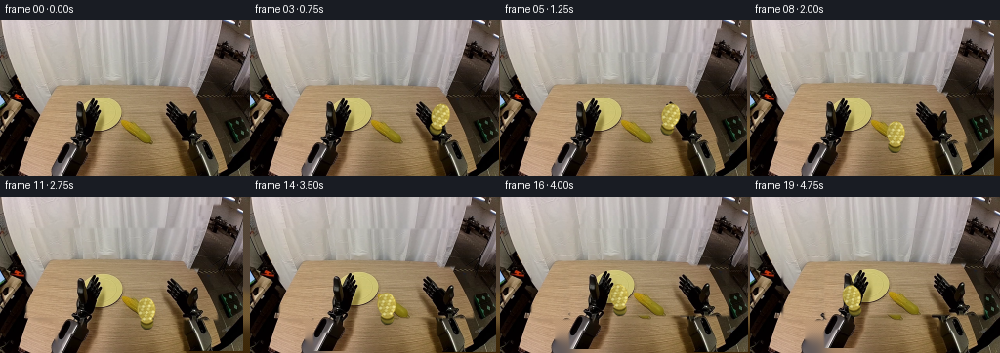
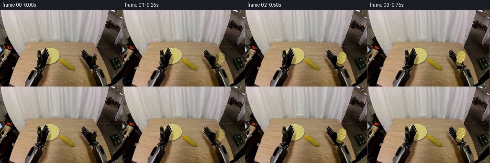
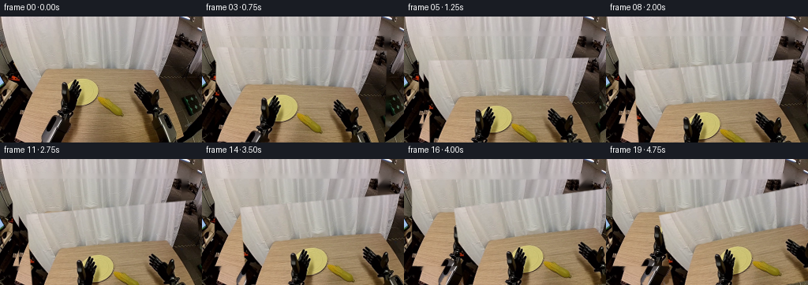
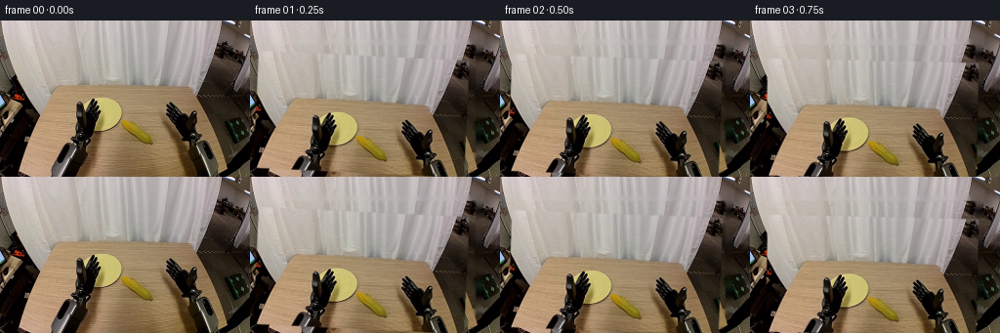
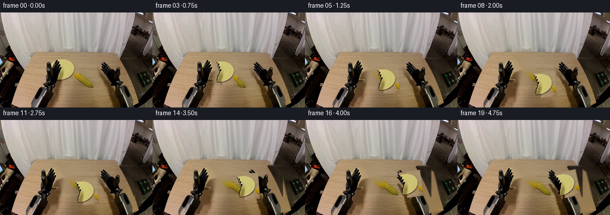
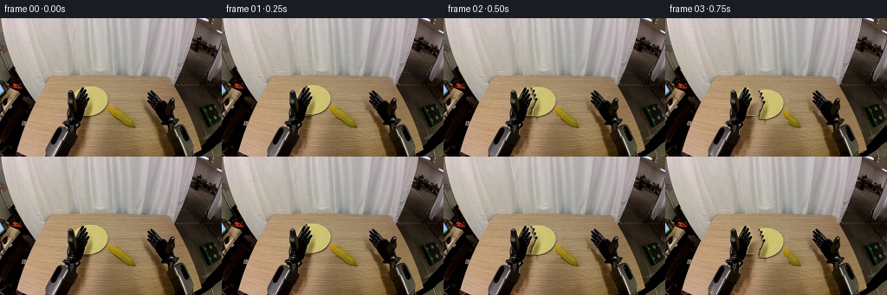
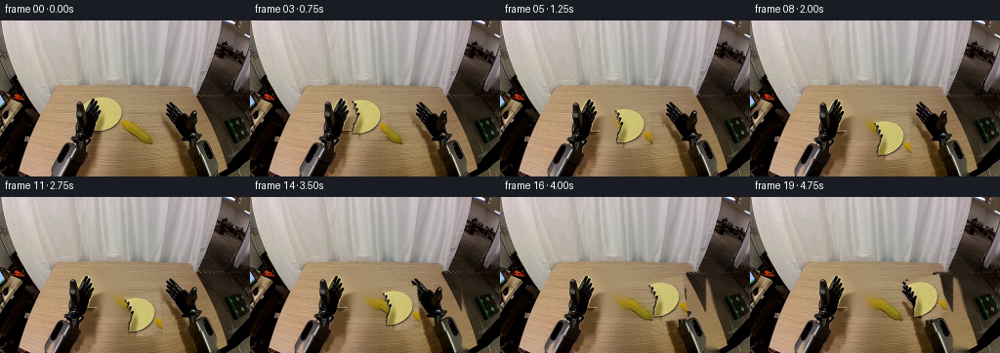
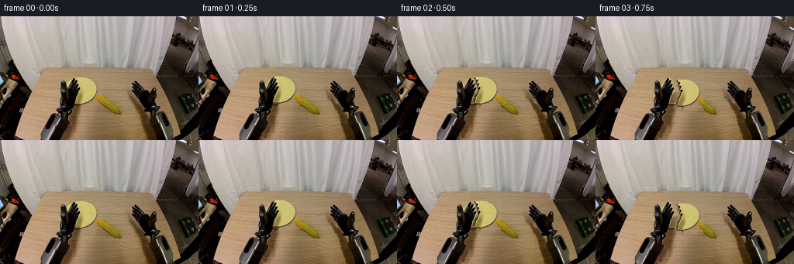

CODING AGENTS AS PIXEL WORLD MODELS
traex/DeepSeek-V4.1-Flash · common50_0037
点击播放 · 原生 RGB 像素
逐轮保存的候选
回放视频、检查图与代码变化。
每份候选均可单独播放。实际图片检查记录在下方工具轨迹中。
候选 01播放与检查图
点击播放 · 原生 RGB 像素


展开代码变化
--- 上一保存版本
+++ 本次保存版本
@@ -0,0 +1,308 @@
+from pathlib import Path
+
+import numpy as np
+from PIL import Image, ImageDraw, ImageFilter
+
+import artifact_io
+
+
+CASE_DIR = Path(__file__).resolve().parent
+WIDTH = 256
+HEIGHT = 160
+FRAMES = 20
+SS = 3
+
+
+def smoothstep(t):
+ t = np.clip(t, 0.0, 1.0)
+ return t * t * (3.0 - 2.0 * t)
+
+
+def ease_in_out(t):
+ t = np.clip(t, 0.0, 1.0)
+ return 0.5 - 0.5 * np.cos(np.pi * t)
+
+
+def shift_image(image, dx, dy):
+ """Translate an RGB array without wrapping at the image boundary."""
+ out = np.zeros_like(image)
+ h, w = image.shape[:2]
+ sx0, sx1 = max(0, -dx), min(w, w - dx)
+ sy0, sy1 = max(0, -dy), min(h, h - dy)
+ dx0, dx1 = max(0, dx), min(w, w + dx)
+ dy0, dy1 = max(0, dy), min(h, h + dy)
+ if sx1 > sx0 and sy1 > sy0:
+ out[dy0:dy1, dx0:dx1] = image[sy0:sy1, sx0:sx1]
+ return out
+
+
+def dilate_mask(mask, radius):
+ image = Image.fromarray((mask.astype(np.uint8) * 255), "L")
+ image = image.filter(ImageFilter.MaxFilter(radius * 2 + 1))
+ return np.asarray(image) > 0
+
+
+def feather_mask(mask, radius):
+ image = Image.fromarray((mask.astype(np.uint8) * 255), "L")
+ image = image.filter(ImageFilter.GaussianBlur(radius))
+ return np.asarray(image).astype(np.float32) / 255.0
+
+
+def fill_holes(mask, iterations=24):
+ """Fill enclosed mask holes using a four-neighbour flood from the border."""
+ outside = np.zeros_like(mask, dtype=bool)
+ outside[0, :] = ~mask[0, :]
+ outside[-1, :] = ~mask[-1, :]
+ outside[:, 0] = ~mask[:, 0]
+ outside[:, -1] = ~mask[:, -1]
+ for _ in range(iterations):
+ grown = outside.copy()
+ grown[1:, :] |= outside[:-1, :]
+ grown[:-1, :] |= outside[1:, :]
+ grown[:, 1:] |= outside[:, :-1]
+ grown[:, :-1] |= outside[:, 1:]
+ grown &= ~mask
+ if np.array_equal(grown, outside):
+ break
+ outside = grown
+ return ~outside
+
+
+def diffuse_inpaint(image, hole, iterations=90):
+ """Small deterministic diffusion inpaint for background uncovered by a gripper."""
+ work = image.astype(np.float32)
+ known = ~hole
+ filled = work.copy()
+ filled[hole] = 0.0
+ weights = known.astype(np.float32)
+ for _ in range(iterations):
+ total = np.zeros_like(filled)
+ count = np.zeros((*hole.shape, 1), dtype=np.float32)
+ total[1:, :] += filled[:-1, :]
+ total[:-1, :] += filled[1:, :]
+ total[:, 1:] += filled[:, :-1]
+ total[:, :-1] += filled[:, 1:]
+ count[1:, :] += weights[:-1, :, None]
+ count[:-1, :] += weights[1:, :, None]
+ count[:, 1:] += weights[:, :-1, None]
+ count[:, :-1] += weights[:, 1:, None]
+ update = hole & (count[:, :, 0] > 0)
+ filled[update] = total[update] / count[update]
+ weights[update] = 1.0
+ return np.clip(filled, 0, 255).astype(np.uint8)
+
+
+def color_mask(image, roi, dark_limit=105, gray_limit=155):
+ x0, y0, x1, y1 = roi
+ crop = image[y0:y1, x0:x1].astype(np.int16)
+ maximum = crop.max(axis=2)
+ minimum = crop.min(axis=2)
+ saturation = maximum - minimum
+ dark = maximum < dark_limit
+ gray_metal = (maximum < gray_limit) & (saturation < 52)
+ mask = np.zeros(image.shape[:2], dtype=bool)
+ mask[y0:y1, x0:x1] = dark | gray_metal
+ return mask
+
+
+def make_corn_sprite():
+ """Render a small, shaded corn cob with a pale kernel pattern."""
+ pad = 10
+ sprite_w, sprite_h = 30, 39
+ canvas = Image.new("RGBA", (sprite_w * SS, sprite_h * SS), (0, 0, 0, 0))
+ draw = ImageDraw.Draw(canvas)
+
+ def ellipse(box, fill, outline=None, width=1):
+ draw.ellipse(tuple(int(v * SS) for v in box), fill=fill, outline=outline, width=width * SS)
+
+ # Husk and the dark underside give the cob a believable attachment point.
+ ellipse((6, 25, 25, 37), (73, 68, 28, 255), (45, 39, 17, 255))
+ ellipse((8, 23, 23, 35), (119, 105, 38, 255))
+ ellipse((5, 5, 25, 32), (119, 99, 22, 255), (82, 67, 17, 255))
+ ellipse((4, 3, 26, 30), (185, 163, 71, 255))
+
+ # Rows of slightly varied kernels, laid out to read as corn at 256x160.
+ kernel_colors = [
+ (231, 218, 137, 255),
+ (216, 201, 112, 255),
+ (204, 187, 91, 255),
+ (192, 171, 70, 255),
+ ]
+ for row in range(7):
+ y = 5.5 + row * 3.15
+ inset = 2.1 if row % 2 else 0.0
+ for col in range(5):
+ x = 7.0 + inset + col * 3.35
+ if x > 21.5:
+ continue
+ color = kernel_colors[(row * 3 + col * 2) % len(kernel_colors)]
+ ellipse((x, y, x + 3.1, y + 2.7), color)
+
+ # Restore the tapered silhouette after laying the kernels.
+ alpha = np.asarray(canvas)[:, :, 3]
+ yy, xx = np.mgrid[0 : sprite_h * SS, 0 : sprite_w * SS]
+ cx = 15.0 * SS
+ cy = 16.0 * SS
+ rx = 9.5 * SS
+ ry = 12.0 * SS
+ body = ((xx - cx) / rx) ** 2 + ((yy - cy) / ry) ** 2 <= 1.0
+ body |= ((xx - 14.5 * SS) / (6.8 * SS)) ** 2 + ((yy - 30.0 * SS) / (7.0 * SS)) ** 2 <= 1.0
+ result = np.asarray(canvas).copy()
+ result[:, :, 3] = np.minimum(alpha, body.astype(np.uint8) * 255)
+
+ image = Image.fromarray(result, "RGBA").resize(
+ (sprite_w, sprite_h), Image.Resampling.LANCZOS
+ )
+ array = np.asarray(image).astype(np.float32)
+ # Add a restrained edge highlight on the light-facing side.
+ rgb = array[:, :, :3]
+ light = np.clip((np.arange(sprite_w)[None, :] - 9.0) / 13.0, 0, 1)
+ rgb *= (0.90 + 0.12 * light[:, :, None])
+ array[:, :, :3] = np.clip(rgb, 0, 255)
+ return array
+
+
+def composite_rgba(base, sprite, cx, cy, opacity=1.0, angle=0.0):
+ """Alpha-composite a rotated RGBA sprite centered at (cx, cy)."""
+ image = Image.fromarray(np.clip(sprite, 0, 255).astype(np.uint8), "RGBA")
+ if angle:
+ image = image.rotate(angle, resample=Image.Resampling.BICUBIC, expand=True)
+ alpha = np.asarray(image)[:, :, 3].astype(np.float32) / 255.0 * opacity
+ rgb = np.asarray(image)[:, :, :3].astype(np.float32)
+ h, w = alpha.shape
+ x0 = int(round(cx - w / 2))
+ y0 = int(round(cy - h / 2))
+ xa, ya = max(0, x0), max(0, y0)
+ xb, yb = min(WIDTH, x0 + w), min(HEIGHT, y0 + h)
+ if xa >= xb or ya >= yb:
+ return base
+ sx0, sy0 = xa - x0, ya - y0
+ sx1, sy1 = sx0 + (xb - xa), sy0 + (yb - ya)
+ a = alpha[sy0:sy1, sx0:sx1, None]
+ out = base.astype(np.float32)
+ out[ya:yb, xa:xb] = rgb[sy0:sy1, sx0:sx1] * a + out[ya:yb, xa:xb] * (1.0 - a)
+ return np.clip(out, 0, 255).astype(np.uint8)
+
+
+def add_contact_shadow(base, cx, cy, rx, ry, strength):
+ if strength <= 0.0:
+ return base
+ layer = Image.new("L", (WIDTH, HEIGHT), 0)
+ draw = ImageDraw.Draw(layer)
+ draw.ellipse(
+ (int(cx - rx), int(cy - ry), int(cx + rx), int(cy + ry)),
+ fill=int(125 * strength),
+ )
+ layer = layer.filter(ImageFilter.GaussianBlur(3.2))
+ shadow = np.asarray(layer).astype(np.float32) / 255.0
+ out = base.astype(np.float32)
+ out *= (1.0 - 0.34 * shadow[:, :, None])
+ return np.clip(out, 0, 255).astype(np.uint8)
+
+
+def build_layers():
+ source = np.asarray(Image.open(CASE_DIR / "first_frame.png").convert("RGB")).copy()
+ assert source.shape == (HEIGHT, WIDTH, 3)
+
+ left_mask = color_mask(source, (58, 74, 108, 160), dark_limit=112, gray_limit=165)
+ left_mask = dilate_mask(fill_holes(left_mask, 35), 2)
+ left_mask[:74, :] = False
+ left_mask[:, :58] = False
+
+ right_mask = color_mask(source, (197, 12, 256, 160), dark_limit=112, gray_limit=165)
+ right_mask = dilate_mask(fill_holes(right_mask, 35), 2)
+
+ # The crop stays rectangular, but its soft alpha follows the metal silhouette.
+ all_motion = left_mask | right_mask
+ background = diffuse_inpaint(source, dilate_mask(all_motion, 2), iterations=110)
+
+ left_rgba = np.dstack(
+ [
+ source.astype(np.float32),
+ feather_mask(left_mask, 1.0)[:, :, None] * 255.0,
+ ]
+ ).astype(np.float32)
+ right_rgba = np.dstack(
+ [
+ source.astype(np.float32),
+ feather_mask(right_mask, 1.0)[:, :, None] * 255.0,
+ ]
+ ).astype(np.float32)
+ return source, background, left_rgba, right_rgba
+
+
+def paste_layer(base, layer, dx, dy):
+ rgb = layer[:, :, :3]
+ alpha = layer[:, :, 3:4] / 255.0
+ moved_rgb = shift_image(rgb.astype(np.uint8), dx, dy).astype(np.float32)
+ moved_alpha = shift_image(alpha, dx, dy)
+ out = moved_rgb * moved_alpha + base.astype(np.float32) * (1.0 - moved_alpha)
+ return np.clip(out, 0, 255).astype(np.uint8)
+
+
+def trajectory(frame_index):
+ """Corn path: right gripper -> plate -> left gripper."""
+ if frame_index == 0:
+ return 203.0, 103.0, 0.0
+ t = (frame_index - 1) / 18.0
+
+ if t < 0.43:
+ u = ease_in_out(t / 0.43)
+ x = 203.0 + (148.0 - 203.0) * u
+ y = 103.0 - 11.0 * np.sin(np.pi * u) + 17.0 * u
+ elif t < 0.61:
+ u = (t - 0.43) / 0.18
+ x = 148.0 + 2.0 * np.sin(np.pi * u)
+ y = 120.0 - 1.5 * np.sin(np.pi * u)
+ else:
+ u = ease_in_out((t - 0.61) / 0.39)
+ x = 148.0 + (105.0 - 148.0) * u
+ y = 120.0 + (106.0 - 120.0) * u - 7.0 * np.sin(np.pi * u)
+ return float(x), float(y), float(smoothstep(min(1.0, (frame_index + 0.5) / 3.0)))
+
+
+def main():
+ source, background, left_layer, right_layer = build_layers()
+ corn = make_corn_sprite()
+ frames = []
+
+ for i in range(FRAMES):
+ if i == 0:
+ frames.append(source.copy())
+ continue
+
+ frame = background.copy()
+
+ # Right arm retracts after delivering the cob, then settles.
+ if i <= 10:
+ u = ease_in_out(i / 10.0)
+ rdx, rdy = int(round(-7.0 * u)), int(round(-2.0 * u))
+ else:
+ u = ease_in_out((i - 10) / 9.0)
+ rdx, rdy = int(round(-7.0 * (1.0 - u))), int(round(-2.0 * (1.0 - u)))
+ frame = paste_layer(frame, right_layer, rdx, rdy)
+
+ # Left arm reaches onto the plate during the second half.
+ reach = ease_in_out(np.clip((i - 10) / 9.0, 0.0, 1.0))
+ ldx = int(round(18.0 * reach))
+ ldy = int(round(-5.0 * reach))
+ frame = paste_layer(frame, left_layer, ldx, ldy)
+
+ cx, cy, opacity = trajectory(i)
+ shadow_strength = 0.45 * smoothstep(min(1.0, max(0.0, (cy - 106.0) / 15.0)))
+ if 8 <= i <= 15:
+ shadow_strength = max(shadow_strength, 0.50)
+ frame = add_contact_shadow(frame, cx + 2.0, cy + 12.0, 9.5, 3.3, shadow_strength)
+ angle = -20.0 + 25.0 * smoothstep(min(1.0, max(0.0, (i - 1) / 11.0)))
+ if i >= 15:
+ angle = 5.0 + 10.0 * smoothstep((i - 15) / 4.0)
+ frame = composite_rgba(frame, corn, cx, cy, opacity=opacity, angle=angle)
+ frames.append(frame)
+
+ result = np.stack(frames).astype(np.uint8)
+ artifact_io.save(result, CASE_DIR)
+ print(f"saved {result.shape[0]} frames at {WIDTH}x{HEIGHT}, 4 fps")
+
+
+if __name__ == "__main__":
+ main()
候选 02播放与检查图
点击播放 · 原生 RGB 像素


展开代码变化
--- 上一保存版本
+++ 本次保存版本
@@ -1,5 +1,6 @@
from pathlib import Path
+import cv2
import numpy as np
from PIL import Image, ImageDraw, ImageFilter
@@ -10,7 +11,6 @@
WIDTH = 256
HEIGHT = 160
FRAMES = 20
-SS = 3
def smoothstep(t):
@@ -24,7 +24,7 @@
def shift_image(image, dx, dy):
- """Translate an RGB array without wrapping at the image boundary."""
+ """Translate an array without wrapping at the image boundary."""
out = np.zeros_like(image)
h, w = image.shape[:2]
sx0, sx1 = max(0, -dx), min(w, w - dx)
@@ -37,19 +37,18 @@
def dilate_mask(mask, radius):
- image = Image.fromarray((mask.astype(np.uint8) * 255), "L")
+ image = Image.fromarray((mask.astype(np.uint8) * 255))
image = image.filter(ImageFilter.MaxFilter(radius * 2 + 1))
return np.asarray(image) > 0
def feather_mask(mask, radius):
- image = Image.fromarray((mask.astype(np.uint8) * 255), "L")
+ image = Image.fromarray((mask.astype(np.uint8) * 255))
image = image.filter(ImageFilter.GaussianBlur(radius))
return np.asarray(image).astype(np.float32) / 255.0
-def fill_holes(mask, iterations=24):
- """Fill enclosed mask holes using a four-neighbour flood from the border."""
+def fill_holes(mask, iterations=40):
outside = np.zeros_like(mask, dtype=bool)
outside[0, :] = ~mask[0, :]
outside[-1, :] = ~mask[-1, :]
@@ -68,104 +67,99 @@
return ~outside
-def diffuse_inpaint(image, hole, iterations=90):
- """Small deterministic diffusion inpaint for background uncovered by a gripper."""
- work = image.astype(np.float32)
- known = ~hole
- filled = work.copy()
- filled[hole] = 0.0
- weights = known.astype(np.float32)
- for _ in range(iterations):
- total = np.zeros_like(filled)
- count = np.zeros((*hole.shape, 1), dtype=np.float32)
- total[1:, :] += filled[:-1, :]
- total[:-1, :] += filled[1:, :]
- total[:, 1:] += filled[:, :-1]
- total[:, :-1] += filled[:, 1:]
- count[1:, :] += weights[:-1, :, None]
- count[:-1, :] += weights[1:, :, None]
- count[:, 1:] += weights[:, :-1, None]
- count[:, :-1] += weights[:, 1:, None]
- update = hole & (count[:, :, 0] > 0)
- filled[update] = total[update] / count[update]
- weights[update] = 1.0
- return np.clip(filled, 0, 255).astype(np.uint8)
-
-
-def color_mask(image, roi, dark_limit=105, gray_limit=155):
- x0, y0, x1, y1 = roi
- crop = image[y0:y1, x0:x1].astype(np.int16)
- maximum = crop.max(axis=2)
- minimum = crop.min(axis=2)
- saturation = maximum - minimum
- dark = maximum < dark_limit
- gray_metal = (maximum < gray_limit) & (saturation < 52)
- mask = np.zeros(image.shape[:2], dtype=bool)
- mask[y0:y1, x0:x1] = dark | gray_metal
- return mask
-
-
-def make_corn_sprite():
- """Render a small, shaded corn cob with a pale kernel pattern."""
- pad = 10
- sprite_w, sprite_h = 30, 39
- canvas = Image.new("RGBA", (sprite_w * SS, sprite_h * SS), (0, 0, 0, 0))
- draw = ImageDraw.Draw(canvas)
-
- def ellipse(box, fill, outline=None, width=1):
- draw.ellipse(tuple(int(v * SS) for v in box), fill=fill, outline=outline, width=width * SS)
-
- # Husk and the dark underside give the cob a believable attachment point.
- ellipse((6, 25, 25, 37), (73, 68, 28, 255), (45, 39, 17, 255))
- ellipse((8, 23, 23, 35), (119, 105, 38, 255))
- ellipse((5, 5, 25, 32), (119, 99, 22, 255), (82, 67, 17, 255))
- ellipse((4, 3, 26, 30), (185, 163, 71, 255))
-
- # Rows of slightly varied kernels, laid out to read as corn at 256x160.
- kernel_colors = [
- (231, 218, 137, 255),
- (216, 201, 112, 255),
- (204, 187, 91, 255),
- (192, 171, 70, 255),
- ]
- for row in range(7):
- y = 5.5 + row * 3.15
- inset = 2.1 if row % 2 else 0.0
- for col in range(5):
- x = 7.0 + inset + col * 3.35
- if x > 21.5:
- continue
- color = kernel_colors[(row * 3 + col * 2) % len(kernel_colors)]
- ellipse((x, y, x + 3.1, y + 2.7), color)
-
- # Restore the tapered silhouette after laying the kernels.
- alpha = np.asarray(canvas)[:, :, 3]
- yy, xx = np.mgrid[0 : sprite_h * SS, 0 : sprite_w * SS]
- cx = 15.0 * SS
- cy = 16.0 * SS
- rx = 9.5 * SS
- ry = 12.0 * SS
- body = ((xx - cx) / rx) ** 2 + ((yy - cy) / ry) ** 2 <= 1.0
- body |= ((xx - 14.5 * SS) / (6.8 * SS)) ** 2 + ((yy - 30.0 * SS) / (7.0 * SS)) ** 2 <= 1.0
- result = np.asarray(canvas).copy()
- result[:, :, 3] = np.minimum(alpha, body.astype(np.uint8) * 255)
-
- image = Image.fromarray(result, "RGBA").resize(
- (sprite_w, sprite_h), Image.Resampling.LANCZOS
- )
- array = np.asarray(image).astype(np.float32)
- # Add a restrained edge highlight on the light-facing side.
- rgb = array[:, :, :3]
- light = np.clip((np.arange(sprite_w)[None, :] - 9.0) / 13.0, 0, 1)
- rgb *= (0.90 + 0.12 * light[:, :, None])
- array[:, :, :3] = np.clip(rgb, 0, 255)
- return array
-
-
-def composite_rgba(base, sprite, cx, cy, opacity=1.0, angle=0.0):
- """Alpha-composite a rotated RGBA sprite centered at (cx, cy)."""
- image = Image.fromarray(np.clip(sprite, 0, 255).astype(np.uint8), "RGBA")
- if angle:
+def dark_components(source):
+ values = source.astype(np.int16)
+ maximum = values.max(axis=2)
+ minimum = values.min(axis=2)
+ dark = (maximum < 92) & ((maximum - minimum) < 62)
+ count, labels, stats, _ = cv2.connectedComponentsWithStats(
+ dark.astype(np.uint8), connectivity=8
+ )
+ result = []
+ for index in range(1, count):
+ x, y, w, h, area = stats[index]
+ if area >= 400:
+ result.append((area, (x, y, w, h), labels == index))
+ result.sort(reverse=True, key=lambda item: item[0])
+ return result
+
+
+def choose_component(components, point):
+ px, py = point
+ for _, bbox, mask in components:
+ x, y, w, h = bbox
+ if x <= px < x + w and y <= py < y + h and mask[py, px]:
+ return mask.copy()
+ raise RuntimeError(f"no dark component at {point}")
+
+
+def corn_mask(source):
+ r, g, b = [source[:, :, i].astype(np.int16) for i in range(3)]
+ bright = (
+ (r > 135)
+ & (g > 110)
+ & (b < 155)
+ & ((g - b) > 28)
+ & ((r - g) < 65)
+ )
+ roi = np.zeros_like(bright)
+ roi[76:118, 96:130] = True
+ bright &= roi
+ count, labels, stats, _ = cv2.connectedComponentsWithStats(
+ bright.astype(np.uint8), connectivity=8
+ )
+ candidates = []
+ for index in range(1, count):
+ x, y, w, h, area = stats[index]
+ if area >= 80:
+ candidates.append((area, index))
+ if not candidates:
+ raise RuntimeError("corn component not found")
+ _, index = max(candidates)
+ mask = labels == index
+ return dilate_mask(fill_holes(mask, 20), 1)
+
+
+def build_layers():
+ source = np.asarray(Image.open(CASE_DIR / "first_frame.png").convert("RGB")).copy()
+ assert source.shape == (HEIGHT, WIDTH, 3)
+
+ components = dark_components(source)
+ right_arm = choose_component(components, (235, 100))
+ left_gripper = choose_component(components, (84, 120))
+
+ # Only the forward gripper section moves; the upper arm remains anchored.
+ yy, xx = np.mgrid[0:HEIGHT, 0:WIDTH]
+ right_finger = right_arm & (xx < 226) & (yy > 76)
+ right_finger = dilate_mask(fill_holes(right_finger, 25), 1)
+ left_gripper = dilate_mask(fill_holes(left_gripper, 25), 1)
+ cob = corn_mask(source)
+
+ holes = dilate_mask(left_gripper | right_finger | cob, 2)
+ inpainted = cv2.inpaint(
+ source, holes.astype(np.uint8) * 255, 3.0, cv2.INPAINT_TELEA
+ )
+ background = inpainted.astype(np.uint8)
+
+ def layer(mask):
+ alpha = feather_mask(mask, 0.65)[:, :, None] * 255.0
+ return np.dstack([source.astype(np.float32), alpha]).astype(np.float32)
+
+ return source, background, layer(left_gripper), layer(right_finger), layer(cob), cob
+
+
+def paste_layer(base, layer, dx, dy):
+ rgb = layer[:, :, :3].astype(np.uint8)
+ alpha = layer[:, :, 3:4] / 255.0
+ moved_rgb = shift_image(rgb, dx, dy).astype(np.float32)
+ moved_alpha = shift_image(alpha, dx, dy)
+ out = moved_rgb * moved_alpha + base.astype(np.float32) * (1.0 - moved_alpha)
+ return np.clip(out, 0, 255).astype(np.uint8)
+
+
+def composite_crop(base, crop_rgba, cx, cy, opacity=1.0, angle=0.0):
+ image = Image.fromarray(np.clip(crop_rgba, 0, 255).astype(np.uint8), "RGBA")
+ if abs(angle) > 0.01:
image = image.rotate(angle, resample=Image.Resampling.BICUBIC, expand=True)
alpha = np.asarray(image)[:, :, 3].astype(np.float32) / 255.0 * opacity
rgb = np.asarray(image)[:, :, :3].astype(np.float32)
@@ -184,88 +178,50 @@
return np.clip(out, 0, 255).astype(np.uint8)
-def add_contact_shadow(base, cx, cy, rx, ry, strength):
- if strength <= 0.0:
+def add_shadow(base, cx, cy, rx, ry, strength):
+ if strength <= 0.01:
return base
layer = Image.new("L", (WIDTH, HEIGHT), 0)
draw = ImageDraw.Draw(layer)
draw.ellipse(
(int(cx - rx), int(cy - ry), int(cx + rx), int(cy + ry)),
- fill=int(125 * strength),
- )
- layer = layer.filter(ImageFilter.GaussianBlur(3.2))
+ fill=int(135 * strength),
+ )
+ layer = layer.filter(ImageFilter.GaussianBlur(2.8))
shadow = np.asarray(layer).astype(np.float32) / 255.0
out = base.astype(np.float32)
- out *= (1.0 - 0.34 * shadow[:, :, None])
+ out *= (1.0 - 0.30 * shadow[:, :, None])
return np.clip(out, 0, 255).astype(np.uint8)
-def build_layers():
- source = np.asarray(Image.open(CASE_DIR / "first_frame.png").convert("RGB")).copy()
- assert source.shape == (HEIGHT, WIDTH, 3)
-
- left_mask = color_mask(source, (58, 74, 108, 160), dark_limit=112, gray_limit=165)
- left_mask = dilate_mask(fill_holes(left_mask, 35), 2)
- left_mask[:74, :] = False
- left_mask[:, :58] = False
-
- right_mask = color_mask(source, (197, 12, 256, 160), dark_limit=112, gray_limit=165)
- right_mask = dilate_mask(fill_holes(right_mask, 35), 2)
-
- # The crop stays rectangular, but its soft alpha follows the metal silhouette.
- all_motion = left_mask | right_mask
- background = diffuse_inpaint(source, dilate_mask(all_motion, 2), iterations=110)
-
- left_rgba = np.dstack(
- [
- source.astype(np.float32),
- feather_mask(left_mask, 1.0)[:, :, None] * 255.0,
- ]
- ).astype(np.float32)
- right_rgba = np.dstack(
- [
- source.astype(np.float32),
- feather_mask(right_mask, 1.0)[:, :, None] * 255.0,
- ]
- ).astype(np.float32)
- return source, background, left_rgba, right_rgba
-
-
-def paste_layer(base, layer, dx, dy):
- rgb = layer[:, :, :3]
- alpha = layer[:, :, 3:4] / 255.0
- moved_rgb = shift_image(rgb.astype(np.uint8), dx, dy).astype(np.float32)
- moved_alpha = shift_image(alpha, dx, dy)
- out = moved_rgb * moved_alpha + base.astype(np.float32) * (1.0 - moved_alpha)
- return np.clip(out, 0, 255).astype(np.uint8)
-
-
-def trajectory(frame_index):
- """Corn path: right gripper -> plate -> left gripper."""
- if frame_index == 0:
- return 203.0, 103.0, 0.0
- t = (frame_index - 1) / 18.0
-
- if t < 0.43:
- u = ease_in_out(t / 0.43)
- x = 203.0 + (148.0 - 203.0) * u
- y = 103.0 - 11.0 * np.sin(np.pi * u) + 17.0 * u
- elif t < 0.61:
- u = (t - 0.43) / 0.18
- x = 148.0 + 2.0 * np.sin(np.pi * u)
- y = 120.0 - 1.5 * np.sin(np.pi * u)
+def corn_path(frame_index):
+ """Corn path from image-left gripper, across the plate, to image-right gripper."""
+ if frame_index <= 0:
+ return 112.0, 96.0
+ if frame_index <= 7:
+ u = ease_in_out(frame_index / 7.0)
+ x = 112.0 + (146.0 - 112.0) * u
+ y = 96.0 + (121.0 - 96.0) * u - 5.0 * np.sin(np.pi * u)
+ elif frame_index <= 11:
+ u = (frame_index - 7) / 4.0
+ x = 146.0 + 1.5 * np.sin(np.pi * u)
+ y = 121.0
else:
- u = ease_in_out((t - 0.61) / 0.39)
- x = 148.0 + (105.0 - 148.0) * u
- y = 120.0 + (106.0 - 120.0) * u - 7.0 * np.sin(np.pi * u)
- return float(x), float(y), float(smoothstep(min(1.0, (frame_index + 0.5) / 3.0)))
+ u = ease_in_out((frame_index - 11) / 7.0)
+ x = 146.0 + (185.0 - 146.0) * u
+ y = 121.0 + (108.0 - 121.0) * u - 4.0 * np.sin(np.pi * u)
+ return float(x), float(y)
def main():
- source, background, left_layer, right_layer = build_layers()
- corn = make_corn_sprite()
+ source, background, left_layer, right_layer, cob_layer, cob_mask = build_layers()
+
+ ys, xs = np.where(cob_mask)
+ x0, x1 = xs.min() - 2, xs.max() + 3
+ y0, y1 = ys.min() - 2, ys.max() + 3
+ corn_crop = cob_layer[y0:y1, x0:x1]
+
frames = []
-
for i in range(FRAMES):
if i == 0:
frames.append(source.copy())
@@ -273,30 +229,26 @@
frame = background.copy()
- # Right arm retracts after delivering the cob, then settles.
- if i <= 10:
- u = ease_in_out(i / 10.0)
- rdx, rdy = int(round(-7.0 * u)), int(round(-2.0 * u))
- else:
- u = ease_in_out((i - 10) / 9.0)
- rdx, rdy = int(round(-7.0 * (1.0 - u))), int(round(-2.0 * (1.0 - u)))
+ # The image-left gripper releases the cob and retracts a little.
+ left_release = ease_in_out(min(1.0, i / 8.0))
+ ldx = int(round(-9.0 * left_release))
+ ldy = int(round(1.0 * left_release))
+ frame = paste_layer(frame, left_layer, ldx, ldy)
+
+ # The image-right gripper approaches the plate for the second half.
+ reach = ease_in_out(np.clip((i - 10) / 8.0, 0.0, 1.0))
+ rdx = int(round(-17.0 * reach))
+ rdy = int(round(1.0 * reach))
frame = paste_layer(frame, right_layer, rdx, rdy)
- # Left arm reaches onto the plate during the second half.
- reach = ease_in_out(np.clip((i - 10) / 9.0, 0.0, 1.0))
- ldx = int(round(18.0 * reach))
- ldy = int(round(-5.0 * reach))
- frame = paste_layer(frame, left_layer, ldx, ldy)
-
- cx, cy, opacity = trajectory(i)
- shadow_strength = 0.45 * smoothstep(min(1.0, max(0.0, (cy - 106.0) / 15.0)))
- if 8 <= i <= 15:
- shadow_strength = max(shadow_strength, 0.50)
- frame = add_contact_shadow(frame, cx + 2.0, cy + 12.0, 9.5, 3.3, shadow_strength)
- angle = -20.0 + 25.0 * smoothstep(min(1.0, max(0.0, (i - 1) / 11.0)))
- if i >= 15:
- angle = 5.0 + 10.0 * smoothstep((i - 15) / 4.0)
- frame = composite_rgba(frame, corn, cx, cy, opacity=opacity, angle=angle)
+ cx, cy = corn_path(i)
+ lift = smoothstep(np.clip((cy - 105.0) / 18.0, 0.0, 1.0))
+ frame = add_shadow(frame, cx + 1.5, cy + 12.5, 8.0, 2.8, 0.25 + 0.30 * lift)
+
+ angle = -3.0 + 8.0 * smoothstep(min(1.0, i / 10.0))
+ if i >= 14:
+ angle = 5.0 + 7.0 * smoothstep((i - 14) / 5.0)
+ frame = composite_crop(frame, corn_crop, cx, cy, opacity=1.0, angle=angle)
frames.append(frame)
result = np.stack(frames).astype(np.uint8)
候选 03播放与检查图
点击播放 · 原生 RGB 像素


展开代码变化
--- 上一保存版本 +++ 本次保存版本 @@ -49,22 +49,22 @@ def fill_holes(mask, iterations=40): - outside = np.zeros_like(mask, dtype=bool) - outside[0, :] = ~mask[0, :] - outside[-1, :] = ~mask[-1, :] - outside[:, 0] = ~mask[:, 0] - outside[:, -1] = ~mask[:, -1] - for _ in range(iterations): - grown = outside.copy() - grown[1:, :] |= outside[:-1, :] - grown[:-1, :] |= outside[1:, :] - grown[:, 1:] |= outside[:, :-1] - grown[:, :-1] |= outside[:, 1:] - grown &= ~mask - if np.array_equal(grown, outside): - break - outside = grown - return ~outside + """Fill only enclosed holes, using the border-connected complement.""" + ys, xs = np.where(mask) + if len(xs) == 0: + return mask.copy() + pad = 2 + x0, x1 = max(0, xs.min() - pad), min(WIDTH, xs.max() + pad + 1) + y0, y1 = max(0, ys.min() - pad), min(HEIGHT, ys.max() + pad + 1) + sub = mask[y0:y1, x0:x1] + count, labels = cv2.connectedComponents((~sub).astype(np.uint8), connectivity=4) + border = set(labels[0, :]) | set(labels[-1, :]) + border |= set(labels[:, 0]) | set(labels[:, -1]) + border.discard(0) + outside = np.isin(labels, list(border)) + out = mask.copy() + out[y0:y1, x0:x1] = sub | ~outside + return out def dark_components(source):
候选 04播放与检查图
点击播放 · 原生 RGB 像素


展开代码变化
--- 上一保存版本
+++ 本次保存版本
@@ -130,7 +130,7 @@
# Only the forward gripper section moves; the upper arm remains anchored.
yy, xx = np.mgrid[0:HEIGHT, 0:WIDTH]
- right_finger = right_arm & (xx < 226) & (yy > 76)
+ right_finger = right_arm & (xx < 221) & (yy > 76)
right_finger = dilate_mask(fill_holes(right_finger, 25), 1)
left_gripper = dilate_mask(fill_holes(left_gripper, 25), 1)
cob = corn_mask(source)
@@ -198,18 +198,18 @@
"""Corn path from image-left gripper, across the plate, to image-right gripper."""
if frame_index <= 0:
return 112.0, 96.0
- if frame_index <= 7:
- u = ease_in_out(frame_index / 7.0)
+ if frame_index <= 8:
+ u = ease_in_out(frame_index / 8.0)
x = 112.0 + (146.0 - 112.0) * u
y = 96.0 + (121.0 - 96.0) * u - 5.0 * np.sin(np.pi * u)
- elif frame_index <= 11:
- u = (frame_index - 7) / 4.0
+ elif frame_index <= 12:
+ u = (frame_index - 8) / 4.0
x = 146.0 + 1.5 * np.sin(np.pi * u)
y = 121.0
else:
- u = ease_in_out((frame_index - 11) / 7.0)
- x = 146.0 + (185.0 - 146.0) * u
- y = 121.0 + (108.0 - 121.0) * u - 4.0 * np.sin(np.pi * u)
+ u = ease_in_out((frame_index - 12) / 6.0)
+ x = 146.0 + (181.0 - 146.0) * u
+ y = 121.0 + (104.0 - 121.0) * u - 4.0 * np.sin(np.pi * u)
return float(x), float(y)
@@ -230,14 +230,14 @@
frame = background.copy()
# The image-left gripper releases the cob and retracts a little.
- left_release = ease_in_out(min(1.0, i / 8.0))
- ldx = int(round(-9.0 * left_release))
+ left_release = ease_in_out(min(1.0, i / 9.0))
+ ldx = int(round(-7.0 * left_release))
ldy = int(round(1.0 * left_release))
frame = paste_layer(frame, left_layer, ldx, ldy)
# The image-right gripper approaches the plate for the second half.
- reach = ease_in_out(np.clip((i - 10) / 8.0, 0.0, 1.0))
- rdx = int(round(-17.0 * reach))
+ reach = ease_in_out(np.clip((i - 11) / 7.0, 0.0, 1.0))
+ rdx = int(round(-14.0 * reach))
rdy = int(round(1.0 * reach))
frame = paste_layer(frame, right_layer, rdx, rdy)
可观测工具轨迹
实际执行的命令与返回图片。
命令 1exit 0
/bin/bash -c "pwd && rg --files -g 'prompt.txt' -g 'GENERATION_RULES.md' -g 'first_frame.png' -g '*.py' -g '*.md' | sort"
命令 2exit 0
/bin/bash -c "git status --short && find . -maxdepth 2 -type f -printf '%p %s bytes\\n' | sort | head -200"
命令 3exit 0
/bin/bash -c 'cat prompt.txt'
命令 4exit 0
/bin/bash -c 'cat GENERATION_RULES.md'
命令 5exit 0
/bin/bash -c "cat task_spec.json && sed -n '1,260p' artifact_io.py"
命令 6exit 127
/bin/bash -c "file first_frame.png && python - <<'PY'
from PIL import Image
im=Image.open('first_frame.png')
print(im.mode, im.size, im.getextrema())
PY"命令 7exit 0
/bin/bash -c "python - <<'PY'
from PIL import Image
import numpy as np
im=np.array(Image.open('first_frame.png').convert('RGB'))
print('shape', im.shape)
# exact most common colors
u,c=np.unique(im.reshape(-1,3),axis=0,return_counts=True)
idx=np.argsort(c)[-30:][::-1]
for i in idx:
print(tuple(u[i]), int(c[i]))
# brightness statistics, channel means
print('mean', im.mean((0,1)), 'std', im.std((0,1)))
PY"命令 8exit 0
/bin/bash -c "python - <<'PY'
from PIL import Image
import numpy as np
im=np.array(Image.open('first_frame.png').convert('RGB')).astype(float)
# block average 4x4 -> 64x40
h,w,_=im.shape
b=im.reshape(40,4,64,4,3).mean((1,3))
for row in b:
s=''
for r,g,bl in row:
mx=max(r,g,bl); mn=min(r,g,bl); sat=(mx-mn)/(mx+1e-6)
if mx<18: c=' '
elif r>1.35*g and g>1.2*bl and r>70: c='Y' # yellow/orange
elif sat<.10 and mx>150: c='#' # bright gray
elif sat<.18 and mx>80: c='+' # gray
elif sat<.25 and mx>35: c='-' # dark gray
elif r>g*1.2 and g>bl*1.15 and r>45: c='w' # wood
elif r>g*1.25 and g>bl*1.1: c='d'
elif bl>r*1.05: c='b'
elif r>g*1.35: c='r'
elif g>r*1.15: c='g'
else: c='.'
s+=c
print(f'{len(s):2d} {s}')
PY"命令 9exit 0
/bin/bash -c "python - <<'PY'
try:
import cv2; print('cv2',cv2.__version__)
except Exception as e: print('no cv2',e)
try:
import scipy; print('scipy',scipy.__version__)
except Exception as e: print('no scipy',e)
try:
import skimage; print('skimage',skimage.__version__)
except Exception as e: print('no skimage',e)
PY"命令 10exit 0
/bin/bash -c "python - <<'PY'
from PIL import Image
im=Image.open('first_frame.png')
print(im.info)
PY"命令 11exit 0
/bin/bash -c "python - <<'PY'
from PIL import Image
import numpy as np, cv2
im=np.array(Image.open('first_frame.png').convert('RGB'))
hsv=cv2.cvtColor(im,cv2.COLOR_RGB2HSV)
# dominant hue bins for saturated pixels
sat=hsv[:,:,1]; val=hsv[:,:,2]
for lo,hi in [(0,20),(20,40),(40,60),(60,90),(90,120),(120,150),(150,180)]:
m=(sat>60)&(hsv[:,:,0]>=lo)&(hsv[:,:,0]<hi)
ys,xs=np.where(m)
print('hue',lo,hi,'n',len(xs),'bbox', (xs.min(),ys.min(),xs.max(),ys.max()) if len(xs) else None,'rgbmean', im[m].mean(0) if len(xs) else None)
# yellow-ish blobs
m=((im[:,:,0].astype(int)>im[:,:,1].astype(int)+10)&(im[:,:,1].astype(int)>im[:,:,2].astype(int)+15)&(im[:,:,0]>80)&(im[:,:,1]>55))
n, lab, stats, cents=cv2.connectedComponentsWithStats(m.astype(np.uint8),8)
print('yellow blobs')
for i in range(1,n):
x,y,w,h,a=stats[i]
if a>=8: print(i,(x,y,w,h,a),cents[i])
PY"命令 12exit 0
/bin/bash -c "python - <<'PY'
from PIL import Image
import numpy as np, cv2
im=np.array(Image.open('first_frame.png').convert('RGB'))
# inspect pixel colors at grid points / detect dark robot arm by low value
hsv=cv2.cvtColor(im,cv2.COLOR_RGB2HSV)
for y in range(0,160,10):
print(f'{y:3d}', ' '.join(f'{im[y,x,0]:02x}{im[y,x,1]:02x}{im[y,x,2]:02x}' for x in range(0,256,16)))
PY"命令 13exit 0
/bin/bash -c "python - <<'PY'
from PIL import Image
import numpy as np, cv2
im=np.array(Image.open('first_frame.png').convert('RGB'))
hsv=cv2.cvtColor(im,cv2.COLOR_RGB2HSV)
gray=cv2.cvtColor(im,cv2.COLOR_RGB2GRAY)
for thr in [20,30,40,50,60,70,80]:
m=(gray<thr).astype(np.uint8)
n,lab,stats,cents=cv2.connectedComponentsWithStats(m,8)
comps=[]
for i in range(1,n):
x,y,w,h,a=stats[i]
if a>=15: comps.append((a,(x,y,w,h),tuple(np.round(cents[i],1))))
comps=sorted(comps,reverse=True)[:20]
print('\\nTHR',thr,'pixels',m.sum(),'components',len(comps))
for c in comps: print(c)
PY"命令 14exit 0
/bin/bash -c "python - <<'PY'
from PIL import Image
import numpy as np, cv2
im=np.array(Image.open('first_frame.png').convert('RGB'))
# print ascii crops via luminance / color classes, 2x2 blocks
for name,(x0,y0,x1,y1) in {'left':(0,40,120,160),'right':(160,15,256,160),'plate':(80,65,180,135),'all':(0,0,256,160)}.items():
print('\\n',name)
crop=im[y0:y1,x0:x1]
# output 2x2 block avg, chars
h,w,_=crop.shape; bh=h//2; bw=w//2
b=crop[:bh*2,:bw*2].reshape(bh,2,bw,2,3).mean((1,3))
for row in b:
s=''
for r,g,bl in row:
mx=max(r,g,bl); mn=min(r,g,bl); sat=(mx-mn)/(mx+1e-6)
if mx<22:c=' '
elif mx<50:c='.'
elif r>g*1.35 and g>bl*1.3 and r>80:c='Y'
elif r>g*1.25 and g>bl*1.15 and r>70:c='w'
elif sat<.1 and mx>150:c='#'
elif sat<.16 and mx>80:c='+'
elif sat<.22:c='-'
elif bl>r*1.05:c='b'
elif r>g*1.25:c='r'
else:c='o'
s+=c
print(s)
PY"命令 15exit 0
/bin/bash -c "python - <<'PY'
from PIL import Image
import numpy as np, cv2
im=np.array(Image.open('first_frame.png').convert('RGB'))
hsv=cv2.cvtColor(im,cv2.COLOR_RGB2HSV)
for name,m in [
('yellow1',(hsv[:,:,0]>=15)&(hsv[:,:,0]<=40)&(hsv[:,:,1]>=90)&(hsv[:,:,2]>=80)),
('yellow2',(hsv[:,:,0]>=18)&(hsv[:,:,0]<=38)&(hsv[:,:,1]>=120)&(hsv[:,:,2]>=120)),
('orange',(hsv[:,:,0]>=5)&(hsv[:,:,0]<=25)&(hsv[:,:,1]>=100)&(hsv[:,:,2]>=100)),
('gold',(im[:,:,0].astype(int)>im[:,:,1].astype(int)+5)&(im[:,:,1].astype(int)>im[:,:,2].astype(int)+30)&(im[:,:,0]>140)&(im[:,:,1]>100)),
]:
m=m.astype(np.uint8)
n,lab,stats,cents=cv2.connectedComponentsWithStats(m,8)
print('\\n',name,'npx',m.sum())
for i in range(1,n):
x,y,w,h,a=stats[i]
if a>=5:
print(' ',a,(x,y,w,h),tuple(np.round(cents[i],1)),'mean',tuple(np.round(im[lab==i].mean(0),1)))
PY"命令 16exit 0
/bin/bash -c "python - <<'PY'
from PIL import Image
import numpy as np, cv2
im=np.array(Image.open('first_frame.png').convert('RGB'))
# Edge map crop 90-220 x 65-145 printed at 1 px char, threshold high gradient
gray=cv2.cvtColor(im,cv2.COLOR_RGB2GRAY)
gx=cv2.Sobel(gray,cv2.CV_32F,1,0,ksize=3); gy=cv2.Sobel(gray,cv2.CV_32F,0,1,ksize=3)
mag=np.sqrt(gx*gx+gy*gy)
for y in range(65,145,2):
s=''
for x in range(90,221,2):
mx=mag[y:y+2,x:x+2].max(); pix=im[y:y+2,x:x+2].mean((0,1))
r,g,b=pix
if mx>180:c='@'
elif mx>90:c='*'
elif mx>45:c='+'
elif r>g*1.2 and g>b*1.2 and r>100:c='y'
elif max(pix)<30:c='#'
else:c=' '
s+=c
print(f'{y:3d}',s)
PY"命令 17exit 0
/bin/bash -c "python - <<'PY'
from PIL import Image
import numpy as np
im=np.array(Image.open('first_frame.png').convert('RGB'))
# sample selected regions and points, print RGB and HSV
import cv2
hsv=cv2.cvtColor(im,cv2.COLOR_RGB2HSV)
for p in [(0,0),(128,0),(255,0),(0,159),(128,159),(255,159),(128,80),(100,105),(138,112),(171,149),(120,115),(195,100),(235,100),(210,110),(40,100),(60,100),(80,100),(100,130),(150,130),(200,130),(230,130)]:
x,y=p; print(p,'rgb',im[y,x],'hsv',hsv[y,x])
PY"命令 18exit 0
/bin/bash -c "python - <<'PY'
from PIL import Image
import numpy as np, cv2
im=np.array(Image.open('first_frame.png').convert('RGB'))
# gradient threshold; print large low-gradient-ish region bounding box around each color
# Let's inspect rows/cols statistics to locate plate; saturation and hue yellow
hsv=cv2.cvtColor(im,cv2.COLOR_RGB2HSV)
for y in range(70,150,4):
print(f'{y:3d}',end=' ')
for x in range(40,221,4):
r,g,b=im[y,x]
h,s,v=hsv[y,x]
if s<30 and v>150:c='#'
elif s<50 and v>80:c='+'
elif h>=20 and h<=32 and s>80 and v>70:c='Y'
elif h<20 and s>90 and v>60:c='w'
elif v<35:c=' '
elif v<75:c='.'
else:c='o'
print(c,end='')
print()
PY"命令 19exit 0
/bin/bash -c "python - <<'PY'
from PIL import Image
import numpy as np, cv2
im=np.array(Image.open('first_frame.png').convert('RGB'))
# use canny and Hough
gray=cv2.cvtColor(im,cv2.COLOR_RGB2GRAY)
edges=cv2.Canny(gray,50,130)
lines=cv2.HoughLinesP(edges,1,np.pi/180,threshold=20,minLineLength=12,maxLineGap=4)
print('lines',None if lines is None else len(lines))
if lines is not None:
for l in lines[:100]:
x1,y1,x2,y2=l[0]; print((x1,y1,x2,y2),'len',round(((x2-x1)**2+(y2-y1)**2)**.5,1))
PY"命令 20exit 1
/bin/bash -c "python - <<'PY'
from PIL import Image
import numpy as np
im=np.array(Image.open('first_frame.png').convert('RGB'))
# chromaticity scatter: print top yellow objects with local connected comps for thresholds
for condname,cond in [
('bright yellow', (im[:,:,0]>120)&(im[:,:,1]>100)&(im[:,:,2]<100)),
('dark yellow', (im[:,:,0]>60)&(im[:,:,1]>50)&(im[:,:,2]<50)),
('brown plate', (im[:,:,0]>120)&(im[:,:,1]>90)&(im[:,:,2]>50)&(im[:,:,2]<130)),
]:
m=cond.astype(np.uint8)
# close/open
n,lab,stats,cents=cv2.connectedComponentsWithStats(m,8)
print('\\n',condname)
for i in range(1,n):
x,y,w,h,a=stats[i]
if a>=10: print(a,(x,y,w,h),cents[i])
PY"命令 21exit 0
/bin/bash -c "python - <<'PY'
from PIL import Image
import numpy as np, cv2
im=np.array(Image.open('first_frame.png').convert('RGB'))
for condname,cond in [
('bright yellow', (im[:,:,0]>120)&(im[:,:,1]>100)&(im[:,:,2]<100)),
('dark yellow', (im[:,:,0]>60)&(im[:,:,1]>50)&(im[:,:,2]<50)),
('brown plate', (im[:,:,0]>120)&(im[:,:,1]>90)&(im[:,:,2]>50)&(im[:,:,2]<130)),
]:
m=cond.astype(np.uint8)
n,lab,stats,cents=cv2.connectedComponentsWithStats(m,8)
print('\\n',condname)
for i in range(1,n):
x,y,w,h,a=stats[i]
if a>=10: print(a,(x,y,w,h),np.round(cents[i],1))
PY"命令 22exit 0
/bin/bash -c "python - <<'PY'
from PIL import Image
import numpy as np
im=np.array(Image.open('first_frame.png').convert('RGB'))
# print coarse rows in a crop as hex avg 4x4 to understand plate region
for y in range(64,148,4):
print(f'{y:3d}',end=' ')
for x in range(84,216,4):
p=im[y:y+4,x:x+4].mean((0,1)).astype(int)
print(f'{p[0]:02x}{p[1]:02x}{p[2]:02x}',end=' ')
print()
PY"命令 23exit 0
/bin/bash -c "python - <<'PY'
import cv2
from PIL import Image
import numpy as np
im=np.array(Image.open('first_frame.png').convert('RGB'))
gray=cv2.cvtColor(im,cv2.COLOR_RGB2GRAY)
gray=cv2.GaussianBlur(gray,(5,5),1.2)
for p2 in [15,20,25,30,35,40,50]:
cs=cv2.HoughCircles(gray,cv2.HOUGH_GRADIENT,dp=1,minDist=15,param1=70,param2=p2,minRadius=12,maxRadius=75)
print('p2',p2, None if cs is None else np.round(cs[0],1).tolist())
PY"命令 24exit 0
/bin/bash -c "python - <<'PY'
from PIL import Image
import numpy as np
im=np.array(Image.open('first_frame.png').convert('RGB'))
# Create magnified crop with color-coded annotation of high saturation / dark regions
# Save nearest-neighbor crop 3x for inspection as allowed intermediate
crop=Image.fromarray(im[60:155,80:220]).resize((560,380),Image.Resampling.NEAREST)
crop.save('inspection_crop.png')
print('saved')
PY"命令 25exit 0
/bin/bash -c "python - <<'PY'
from PIL import Image
import numpy as np
im=np.array(Image.open('first_frame.png').convert('RGB')).astype(np.int16)
# Find dark structures: print per-row runs of dark pixels (<55) in region x 0-255
for y in range(0,160,4):
row=im[y].max(1)
m=row<55
runs=[]; st=None
for x,v in enumerate(np.r_[m,False]):
if v and st is None: st=x
if not v and st is not None:
if x-st>=2:runs.append((st,x-1))
st=None
print(f'{y:3d}',runs)
PY"命令 26exit 0
/bin/bash -c "python - <<'PY'
from PIL import Image
import numpy as np, cv2
im=np.array(Image.open('first_frame.png').convert('RGB'))
# Segment likely arm pixels by dark or gray metallic-ish, then skeleton? Save masks as png.
for name,m in [
('dark', (im.max(2)<60)),
('dark2', (im.max(2)<85)),
('arm', ((im.max(2)<90)&(np.abs(im[:,:,0].astype(int)-im[:,:,1].astype(int))<45))),
]:
Image.fromarray((m*255).astype(np.uint8)).resize((512,320),Image.Resampling.NEAREST).save(name+'_mask.png')
print(name,m.sum())
PY"命令 27exit 0
/bin/bash -c "python - <<'PY'
from PIL import Image
import numpy as np, cv2
im=np.array(Image.open('first_frame.png').convert('RGB'))
gray=cv2.cvtColor(im,cv2.COLOR_RGB2GRAY)
# LBP-ish high texture? Print ASCII of the actual image using luminance in 80x40 blocks with crop 0-256 full
chars=' .:-=+*#%@'
b=gray.reshape(40,4,64,4).mean((1,3))
for row in b:
print(''.join(chars[min(9,int(v)//26)] for v in row))
PY"命令 28exit 0
/bin/bash -c "python - <<'PY'
from PIL import Image
import numpy as np, cv2
im=np.array(Image.open('first_frame.png').convert('RGB'))
gray=cv2.cvtColor(im,cv2.COLOR_RGB2GRAY)
chars=' .:-=+*#%@'
# threshold levels via adaptive? print crop region 0..256, 0..160 at 2x4 block
for y0,y1 in [(0,160)]:
for y in range(y0,y1,2):
s=''
for x in range(0,256,2):
v=gray[y:y+2,x:x+2].mean()
s+=chars[min(9,int(v)//26)]
print(s)
PY"命令 29exit 0
/bin/bash -c "python - <<'PY'
from PIL import Image
import numpy as np, cv2
im=np.array(Image.open('first_frame.png').convert('RGB'))
# segment high-gradient structural lines then visualize via threshold into block ascii with all gradients
# Use Canny and downscale occupancy 2x2 blocks
edges=cv2.Canny(im,40,100)
for y in range(0,160,2):
s=''
for x in range(0,256,2):
n=edges[y:y+2,x:x+2].sum()
s += '#' if n>=3 else '+' if n>=1 else ' '
print(f'{y:3d}',s)
PY"命令 30exit 0
/bin/bash -c "python - <<'PY'
from PIL import Image
import numpy as np, cv2
im=np.array(Image.open('first_frame.png').convert('RGB'))
hsv=cv2.cvtColor(im,cv2.COLOR_RGB2HSV)
# crop 80:240, 55:160, 2x2 blocks. color classes based on hue/sat/val
for y in range(55,160,2):
s=''
for x in range(80,240,2):
h,sat,v=np.median(hsv[y:y+2,x:x+2].reshape(-1,3),axis=0)
r,g,b=np.mean(im[y:y+2,x:x+2],axis=(0,1))
if v<25:c=' '
elif v<55:c='.'
elif sat<25 and v>130:c='#'
elif sat<45 and v>75:c='+'
elif sat<65 and v>50:c='-'
elif 18<=h<=35 and sat>=110 and v>=100:c='Y'
elif 18<=h<=35 and sat>=90 and v>=65:c='y'
elif h<18 and sat>=90 and v>=50:c='w'
elif sat>=60:c='o'
else:c=':'
s+=c
print(f'{y:3d}',s)
PY"命令 31exit 0
/bin/bash -c "python - <<'PY'
from PIL import Image
import numpy as np, cv2
im=np.array(Image.open('first_frame.png').convert('RGB'))
hsv=cv2.cvtColor(im,cv2.COLOR_RGB2HSV)
# inspect yellow saturation mask around center; compute coordinates within table bounding polygon based on color
# Print exact coordinates for a few x columns / y ranges of yellow mask
for x in [95,100,105,110,120,130,140,150,160,170,180,190,200]:
ys=[]
for y in range(70,160):
h,s,v=hsv[y,x]
if 18<=h<=35 and s>=110 and v>=100: ys.append(y)
# runs
runs=[];st=None
for y in range(70,160):
val=y in ys
if val and st is None:st=y
if not val and st is not None:runs.append((st,y-1));st=None
if st is not None:runs.append((st,159))
print(x,runs)
PY"命令 32exit 0
/bin/bash -c "python - <<'PY'
from PIL import Image
import numpy as np, cv2
im=np.array(Image.open('first_frame.png').convert('RGB'))
hsv=cv2.cvtColor(im,cv2.COLOR_RGB2HSV)
# Get yellow pixel coords and fit ellipse/PCA
m=(hsv[:,:,0]>=18)&(hsv[:,:,0]<=35)&(hsv[:,:,1]>=110)&(hsv[:,:,2]>=100)
m &= (np.indices(m.shape)[1]>=90)&(np.indices(m.shape)[1]<=220)&(np.indices(m.shape)[0]>=80)
y,x=np.where(m)
print('n',len(x),'bbox',x.min(),y.min(),x.max(),y.max())
print('mean',x.mean(),y.mean(),'cov',np.cov(x,y),'corr',np.corrcoef(x,y)[0,1])
# per-row x ranges
for yy in range(80,160,2):
xx=np.where(m[yy])[0]
if len(xx): print(yy,len(xx),xx.min(),xx.max())
PY"命令 33exit 0
/bin/bash -c "python - <<'PY'
from PIL import Image
import numpy as np
im=np.array(Image.open('first_frame.png').convert('RGB'))
# print row crops of hue/sat as ranges using visual chars at 1px for y 85..140, x 90..200, scale every 2 x and 1 y
for y in range(85,141):
s=''
for x in range(90,201,2):
r,g,b=im[y,x].astype(int); h=None
# approximate classify by ratios
mx=max(r,g,b); mn=min(r,g,b); sat=(mx-mn)/(mx+1e-5)
if mx<35:c=' '
elif r>g+5 and g>b+20 and mx>100:c='Y'
elif sat<.12 and mx>140:c='#'
elif sat<.25 and mx>60:c='+'
elif r>g+10 and g>b+10 and mx>70:c='w'
elif mx<80:c='.'
else:c='o'
s+=c
print(f'{y:3d}',s)
PY"命令 34exit 0
/bin/bash -c "python - <<'PY'
from PIL import Image
import numpy as np
im=np.array(Image.open('first_frame.png').convert('RGB')).astype(int)
# map each pixel to nearest of selected semantic colors and print block majority crop
palette={
' ':(3,2,2), 'S':(180,175,170),'s':(120,115,110),'d':(45,35,25),'w':(175,145,105),'W':(195,170,135),'Y':(150,120,20),'y':(205,195,110),'g':(80,60,30),'b':(110,140,180)
}
names=list(palette); P=np.array([palette[k] for k in names])
d=((im[:,:,None,:]-P[None,None,:,:])**2).sum(-1)
cls=d.argmin(-1)
for y in range(55,160,2):
s=''
for x in range(70,230,2):
vals,c=np.unique(cls[y:y+2,x:x+2],return_counts=True)
# prioritize yellow, then white
if 6 in vals and c[list(vals).index(6)]>=1:c='Y'
elif 7 in vals and c[list(vals).index(7)]>=2:c='y'
elif 0 in vals and c[list(vals).index(0)]>=2:c=' '
elif 5 in vals and c[list(vals).index(5)]>=1:c='W'
else:c=names[vals[c.argmax()]]
s+=c
print(f'{y:3d}',s)
PY"命令 35exit 0
/bin/bash -c "python - <<'PY'
from PIL import Image
import numpy as np
im=np.array(Image.open('first_frame.png').convert('RGB')).astype(int)
# Use distance in normalized RGB to semantic palette and save colorized segmentation for manual numeric interpretation
palette={
'background':(200,195,190),'wood_light':(170,140,100),'wood_mid':(140,110,75),'wood_dark':(85,65,45),
'yellow_bright':(205,195,110),'yellow_dark':(145,120,30),'arm_dark':(15,10,5),'arm_mid':(80,70,60),'plate':(175,145,110)
}
out_colors={'background':(220,220,220),'wood_light':(210,170,120),'wood_mid':(160,120,80),'wood_dark':(90,60,30),'yellow_bright':(255,255,0),'yellow_dark':(255,160,0),'arm_dark':(0,0,0),'arm_mid':(70,70,70),'plate':(255,0,255)}
names=list(palette); P=np.array([palette[k] for k in names],float)
X=im.reshape(-1,3)
d=((X[:,None,:]-P[None,:,:])**2).sum(-1)
idx=d.argmin(-1).reshape(im.shape[:2])
out=np.zeros_like(im,dtype=np.uint8)
for i,k in enumerate(names): out[idx==i]=out_colors[k]
Image.fromarray(out).resize((1024,640),Image.Resampling.NEAREST).save('seg_semantic.png')
print('saved')
PY"命令 36exit 0
/bin/bash -c "python - <<'PY'
from PIL import Image
import numpy as np, cv2
im=np.array(Image.open('first_frame.png').convert('RGB'))
hsv=cv2.cvtColor(im,cv2.COLOR_RGB2HSV)
# Define yellow mask generously, morph close and report components + representative colors
m=((hsv[:,:,0]>=15)&(hsv[:,:,0]<=40)&(hsv[:,:,1]>=90)&(hsv[:,:,2]>=60)).astype(np.uint8)
m=cv2.morphologyEx(m,cv2.MORPH_CLOSE,np.ones((3,3),np.uint8))
m=cv2.morphologyEx(m,cv2.MORPH_OPEN,np.ones((2,2),np.uint8))
n,lab,stats,cents=cv2.connectedComponentsWithStats(m,8)
print('yellow comps')
for i in range(1,n):
x,y,w,h,a=stats[i]
if a<20:continue
mask=lab==i
print(i,'a',a,'bbox',x,y,w,h,'cent',np.round(cents[i],1),'rgbmean',np.round(im[mask].mean(0),1),'hsvmean',np.round(hsv[mask].mean(0),1))
# row extent each 5 px
for yy in range(y,y+h,5):
xx=np.where(mask[yy])[0]
if len(xx): print(' y',yy,'x',xx.min(),xx.max(),'n',len(xx))
PY"命令 37exit 0
/bin/bash -c "python - <<'PY'
from PIL import Image
import numpy as np, cv2
im=np.array(Image.open('first_frame.png').convert('RGB'))
# simple cv2 segmentation by local color clusters in ROI 80:230,65:160
# Inspect saturation/value and yellow chroma grid as numeric max/min
hsv=cv2.cvtColor(im,cv2.COLOR_RGB2HSV)
for y in range(80,145,3):
print(f'{y:3d}',end=' ')
for x in range(90,225,4):
r,g,b=im[y,x].astype(int)
# yellow strength ratio b low, r/g close
q=min(r,g)-b
s=' '
if q>80:s='@'
elif q>55:s='#'
elif q>35:s='+'
elif q>18:s='-'
print(s,end='')
print()
PY"命令 38exit 0
/bin/bash -c "python - <<'PY'
from PIL import Image
import numpy as np, cv2
im=np.array(Image.open('first_frame.png').convert('RGB'))
# Compute local color stats for key yellow-looking patches
patches={
'bright_lower_center':(120,140,150,160), 'bright_upper_center':(110,95,140,115),
'right_lower':(170,145,190,160), 'right_mid':(180,125,220,145),
'left_arm_yellow':(90,120,100,150), 'plate_center':(145,120,190,150),
'right_gripper':(200,85,225,120), 'wood_right':(215,140,245,160)
}
for k,(x0,y0,x1,y1) in patches.items():
a=im[y0:y1,x0:x1]
print(k,'mean',np.round(a.mean((0,1)),1),'median',np.median(a.reshape(-1,3),0),'max',a.reshape(-1,3).max(0),'min',a.reshape(-1,3).min(0))
PY"命令 39exit 0
/bin/bash -c "python - <<'PY'
from PIL import Image
import numpy as np
im=np.array(Image.open('first_frame.png').convert('RGB')).astype(float)
# inspect exact image in 4x4 block average, map to emoji-ish semantic strings based on region stats
# We need identify table boundaries by color segmentation; print bbox of connected similar wood.
# Color distance from sample wood at (140,80)
sample=im[80,140]
d=np.sqrt(((im-sample)**2).sum(2))
m=d<35
import cv2
n,lab,stats,cents=cv2.connectedComponentsWithStats(m.astype(np.uint8),8)
print('wood sample',sample)
for i in range(1,n):
x,y,w,h,a=stats[i]
if a>100: print(a,(x,y,w,h),cents[i])
PY"命令 40exit 0
/bin/bash -c "python - <<'PY'
from PIL import Image
import numpy as np, cv2
im=np.array(Image.open('first_frame.png').convert('RGB'))
# HSV hues around center and exact color scanline at y=100,110,120,130,140 x every 4
for y in [70,75,80,85,90,95,100,105,110,115,120,125,130,135,140,145,150,155]:
print('\\ny=',y)
for x in range(80,221,8):
print(f'{x}:{tuple(im[y,x])}',end=' ')
print()
PY"命令 41exit 0
/bin/bash -c "python - <<'PY'
from PIL import Image
import numpy as np
im=np.array(Image.open('first_frame.png').convert('RGB'))
# Generate 4x upscaled with grid labels every 16 pixels? no drawing? local inspection allowed, use PIL draw okay intermediate.
from PIL import ImageDraw, ImageFont
scale=4
out=Image.fromarray(im).resize((256*scale,160*scale),Image.Resampling.NEAREST)
d=ImageDraw.Draw(out)
for x in range(0,256,16):
d.line((x*scale,0,x*scale,160*scale),fill=(255,0,0),width=1)
d.text((x*scale+2,2),str(x),fill=(255,0,0))
for y in range(0,160,16):
d.line((0,y*scale,256*scale,y*scale),fill=(255,0,0),width=1)
d.text((2,y*scale+2),str(y),fill=(255,0,0))
out.save('grid_inspection.png')
print('saved grid_inspection.png')
PY"命令 42exit 0
/bin/bash -c "python - <<'PY'
from PIL import Image
import numpy as np
im=np.array(Image.open('first_frame.png').convert('RGB')).astype(float)
# print image as 8x8 block color category but preserve detailed hue: category palette nearest using kmeans within table and arms
# kmeans colors globally
import cv2
Z=im.reshape(-1,3).astype(np.float32)
criteria=(cv2.TERM_CRITERIA_EPS+cv2.TERM_CRITERIA_MAX_ITER,50,0.5)
for K in [8,12,16]:
_,labels,centers=cv2.kmeans(Z,K,None,criteria,5,cv2.KMEANS_PP_CENTERS)
print('K',K)
for i,c in enumerate(centers): print(i,np.round(c,0), 'n',int((labels==i).sum()))
PY"命令 43exit 0
/bin/bash -c "python - <<'PY'
from PIL import Image
import numpy as np
im=np.array(Image.open('first_frame.png').convert('RGB'))
# print a 1px grid around suspected corn 95-125 x 75-115 with RGB encoded in chars by r,g,b order coarse
for y in range(72,116,2):
s=''
for x in range(92,128,1):
r,g,b=im[y,x].astype(int)
if r>180 and g>160 and b<150:c='@' # corn pale
elif r>130 and g>100 and b<100:c='Y'
elif r>110 and g>80 and b<60:c='y'
elif r>90 and g>70 and b<50:c='o'
elif r<30 and g<30 and b<30:c=' '
elif r>130 and g>110 and b>70:c='w'
else:c='.'
s+=c
print(f'{y:3d}',s)
PY"命令 44exit 0
/bin/bash -c "python - <<'PY'
from PIL import Image
import numpy as np
im=np.array(Image.open('first_frame.png').convert('RGB'))
# detailed table of sample pixels in x=120..205 y=80..130, classify by R-G-B thresholds
for y in range(78,132,2):
print(f'{y:3d}',end=' ')
for x in range(118,206,2):
r,g,b=im[y,x].astype(int)
if r>180 and g>160 and b<150:c='C' # corn bright
elif r>130 and g>100 and b<90:c='Y'
elif r>100 and g>80 and b<65:c='y'
elif r<35 and g<35 and b<35:c=' '
elif r>130 and g>110 and b>75:c='w'
elif r>90 and g>70 and b>45:c='o'
else:c='.'
print(c,end='')
print()
PY"命令 45exit 0
/bin/bash -c "python - <<'PY'
from PIL import Image
import numpy as np
im=np.array(Image.open('first_frame.png').convert('RGB'))
# output detailed patch x=180..230 y=60..140: every px semantic
for y in range(60,142,2):
s=''
for x in range(176,232):
r,g,b=im[y,x].astype(int)
if max(r,g,b)<20:c=' '
elif r>180 and g>160 and b<150:c='C'
elif r>140 and g>110 and b<90:c='Y'
elif r>90 and g>70 and b<60:c='y'
elif max(r,g,b)>150 and min(r,g,b)>100:c='#'
elif r>g*1.2 and g>b*1.3:c='w'
elif max(r,g,b)<75:c='.'
else:c='o'
s+=c
print(f'{y:3d}',s)
PY"命令 46exit 0
/bin/bash -c "python - <<'PY'
from PIL import Image
import numpy as np
im=np.array(Image.open('first_frame.png').convert('RGB'))
# print full-width coarse semantic map at 1x y, 2x x around y=70..160
for y in range(68,160,2):
s=''
for x in range(0,256,2):
r,g,b=im[y,x].astype(int)
if max(r,g,b)<30:c=' '
elif r>180 and g>160 and b<150:c='C'
elif r>140 and g>110 and b<95:c='Y'
elif r>100 and g>80 and b<70:c='y'
elif max(r,g,b)>170 and min(r,g,b)>130:c='#'
elif max(r,g,b)<90:c='.'
elif r>g*1.15 and g>b*1.2:c='w'
else:c='o'
s+=c
print(f'{y:3d}',s)
PY"命令 47exit 0
/bin/bash -c "python - <<'PY'
from PIL import Image
import numpy as np, cv2
im=np.array(Image.open('first_frame.png').convert('RGB'))
r,g,b=[im[:,:,i].astype(int) for i in range(3)]
conds={
'yellow':(r>110)&(g>80)&(b<100)&((r-g)>5)&((g-b)>20),
'yellow2':(r>140)&(g>110)&(b<120)&((g-b)>30),
'bright':(r>160)&(g>140)&(b<150),
}
for name,m in conds.items():
m=(m.astype(np.uint8))
m[:60]=0;m[:, :80]=0
n,lab,stats,cents=cv2.connectedComponentsWithStats(m,8)
print('\\n',name)
for i in range(1,n):
x,y,w,h,a=stats[i]
if a>=10: print(a,(x,y,w,h),tuple(np.round(cents[i],1)),np.round(im[lab==i].mean(0),1))
PY"命令 48exit 0
/bin/bash -c "python - <<'PY'
from PIL import Image
import numpy as np
im=np.array(Image.open('first_frame.png').convert('RGB'))
# Corn assumed pale region x 103:127 y 80:113. Print actual values on grid to see kernel rows.
for y in range(80,114,2):
print(f'{y:3d}',end=' ')
for x in range(102,128,2):
r,g,b=im[y,x]
print(f'{r:02x}{g:02x}{b:02x}',end=' ')
print()
PY"命令 49exit 0
/bin/bash -c "python - <<'PY'
from PIL import Image
import numpy as np
im=np.array(Image.open('first_frame.png').convert('RGB'))
# identify bright corn-like pixels in table region and report max/mean by patch
mask=(im[:,:,0]>180)&(im[:,:,1]>160)&(im[:,:,2]<160)
ys,xs=np.where(mask)
print('bright bbox',xs.min(),ys.min(),xs.max(),ys.max(),'count',len(xs))
for y0 in range(60,160,10):
for x0 in range(80,230,10):
a=mask[y0:y0+10,x0:x0+10].sum()
if a>10: print((x0,y0),a)
PY"命令 50exit 0
/bin/bash -c "python - <<'PY'
from PIL import Image
import numpy as np
im=np.array(Image.open('first_frame.png').convert('RGB'))
# Find likely table plane corners based on wood mask broad color
r,g,b=[im[:,:,i].astype(int) for i in range(3)]
wood=(r>85)&(g>65)&(b>35)&(r-g>15)&(g-b>10)
ys,xs=np.where(wood)
# robust bbox and row extents
print('bbox',xs.min(),ys.min(),xs.max(),ys.max())
for y in range(60,160,5):
xx=np.where(wood[y])[0]
if len(xx): print(y,xx.min(),xx.max(),len(xx))
PY"命令 51exit 0
/bin/bash -c "python - <<'PY'
from PIL import Image
import numpy as np
im=np.array(Image.open('first_frame.png').convert('RGB'))
# print values for likely right gripper x 200-225 y 80-125 and left gripper x 75-110 y 80-125 in 2 px blocks as hex to locate fingers
for name,(x0,x1,y0,y1) in [('right',(198,228,75,125)),('left',(72,110,78,130))]:
print('\\n',name)
for y in range(y0,y1,2):
print(f'{y:3d}',end=' ')
for x in range(x0,x1,2):
p=im[y:y+2,x:x+2].mean((0,1)).astype(int)
print(f'{p[0]:02x}{p[1]:02x}{p[2]:02x}',end=' ')
print()
PY"命令 52exit 0
/bin/bash -c "python - <<'PY'
from PIL import Image
import numpy as np
im=np.array(Image.open('first_frame.png').convert('RGB'))
# Print actual RGB grid around the likely yellow plate/object, annotated by strongest corn kernel color
for y in range(95,160,3):
print(f'{y:3d}',end=' ')
for x in range(115,196,3):
p=im[y:y+3,x:x+3].mean((0,1)).astype(int)
# symbolic by hue
r,g,b=p
if r>170 and g>150 and b<150:c='C'
elif r>130 and g>100 and b<80:c='Y'
elif r>100 and g>80 and b<60:c='y'
elif max(p)<45:c=' '
elif r>g*1.2 and g>b*1.25:c='w'
elif max(p)<90:c='.'
else:c='o'
print(c,end='')
print()
PY"命令 53exit 0
/bin/bash -c "python - <<'PY'
from PIL import Image
import numpy as np
im=np.array(Image.open('first_frame.png').convert('RGB'))
# local contrast stats around corn x100:128,y78:114 and plate center x120:190,y110:150
for name,(x0,y0,x1,y1) in [('corn',(100,78,128,114)),('plate',(120,110,190,150)),('rightobj',(180,90,220,135))]:
a=im[y0:y1,x0:x1]
print(name,'mean',a.mean((0,1)),'std',a.std((0,1)))
# min/max and hist saturation
import cv2
hsv=cv2.cvtColor(a,cv2.COLOR_RGB2HSV)
print('sat percentiles',np.percentile(hsv[:,:,1],[0,10,25,50,75,90,100]),'val',np.percentile(hsv[:,:,2],[0,10,25,50,75,90,100]))
PY"命令 54exit 0
/bin/bash -c "python - <<'PY'
from PIL import Image
import numpy as np
im=np.array(Image.open('first_frame.png').convert('RGB')).astype(float)
# use color segmentation to identify contiguous \"bright yellow\" and \"wood\"; print row min/max for top y
r,g,b=im[:,:,0],im[:,:,1],im[:,:,2]
yellow=(r>175)&(g>155)&(b<165)&((g-b)>45)
wood=(r>100)&(g>80)&(b>45)&((r-g)>10)&((g-b)>15)
for y in range(60,160,2):
xx=np.where(yellow[y])[0]
if len(xx): print('Y',y,xx.min(),xx.max(),len(xx))
PY"命令 55exit 0
/bin/bash -c 'python generate.py'
命令 56exit 0
/bin/bash -c "python - <<'PY'
from PIL import Image
import numpy as np
src=np.array(Image.open('first_frame.png').convert('RGB'))
frames=np.stack([np.array(Image.open(f'frames/{i:02d}.png').convert('RGB')) for i in range(20)])
print('shape',frames.shape,'dtype',frames.dtype)
print('frame0 exact',np.array_equal(frames[0],src),'maxdiff',np.abs(frames[0].astype(int)-src).max())
for i in range(1,20):
d=np.abs(frames[i].astype(int)-frames[i-1].astype(int))
print(i,'changed',int((d.max(2)>0).sum()),'mean',round(float(d.mean()),3),'max',int(d.max()))
PY"命令 57exit 0
/bin/bash -c "python - <<'PY'
from PIL import Image
import numpy as np
for i in [0,1,4,8,11,14,17,19]:
a=np.array(Image.open(f'frames/{i:02d}.png').convert('RGB')).astype(float)
gray=a.mean(2)
print(i,'mean',np.round(a.mean((0,1)),1),'std',round(float(gray.std()),1),'dark',int((gray<35).sum()),'bright',int((gray>170).sum()))
PY"命令 58exit 0
/bin/bash -c 'ls -lh pixels.npz index.html inspection.png transition_check.png frames | head -40'
命令 59exit 0
/bin/bash -c "python - <<'PY'
from PIL import Image
import numpy as np
# create zoomed frame contact sheets as intermediate inspection images
for group,inds in [('early',[0,1,2,3,4,5]),('mid',[6,7,8,9,10,11]),('late',[12,13,14,15,16,17,18,19])]:
canvas=Image.new('RGB',(256*len(inds),160),(20,20,20))
for j,i in enumerate(inds):
canvas.paste(Image.open(f'frames/{i:02d}.png'),(j*256,0))
canvas.resize((canvas.width*2,canvas.height*2),Image.Resampling.NEAREST).save(f'contact_{group}.png')
print('saved')
PY"命令 60exit 0
/bin/bash -c "python - <<'PY'
from PIL import Image
import numpy as np, cv2
src=np.array(Image.open('first_frame.png').convert('RGB'))
# Quantify masks leakage by region and coverage. Reuse function via import but suppress main
import generate
left=generate.color_mask(src,(58,74,108,160),112,165); left=generate.dilate_mask(generate.fill_holes(left,35),2);left[:74]=0;left[:,:58]=0
right=generate.color_mask(src,(197,12,256,160),112,165);right=generate.dilate_mask(generate.fill_holes(right,35),2)
for name,m in [('left',left),('right',right)]:
ys,xs=np.where(m)
print(name,'pixels',len(xs),'bbox',(xs.min(),ys.min(),xs.max(),ys.max()))
# count per 20x20 tile
for y in range(0,160,20):
print([int(m[y:y+20,x:x+20].sum()) for x in range(0,256,20)])
# Difference where not masks for frames 1..19; should be mostly corn? quantify max diff outside corn trajectory bbox
frames=np.stack([np.array(Image.open(f'frames/{i:02d}.png')) for i in range(20)])
for i in [1,2,5,9,12,15,19]:
d=np.abs(frames[i].astype(int)-src.astype(int)).max(2)
print('frame',i,'outside masks changed',int((d[~left&~right]>20).sum()),'max',d[~left&~right].max())
PY"命令 61exit 0
/bin/bash -c "python - <<'PY'
from PIL import Image
import numpy as np, cv2
src=np.array(Image.open('first_frame.png').convert('RGB'))
for name,roi in [('left',(0,60,110,160)),('right',(195,10,256,160)),('rightwide',(165,10,256,160))]:
x0,y0,x1,y1=roi
a=src[y0:y1,x0:x1].astype(np.int16)
mx=a.max(2); mn=a.min(2)
for th in [50,70,90,110,130,150]:
m=(mx<th)&((mx-mn)<60)
print(name,th,int(m.sum()))
PY"命令 62exit 0
/bin/bash -c "python - <<'PY'
from PIL import Image
import numpy as np, cv2
src=np.array(Image.open('first_frame.png').convert('RGB'))
# print ascii mask for threshold 90 in regions, every 2 px
for name,(x0,y0,x1,y1) in [('left',(0,50,120,160)),('right',(160,0,256,160))]:
a=src[y0:y1,x0:x1].astype(int); mx=a.max(2);mn=a.min(2)
m=(mx<90)&((mx-mn)<60)
print('\\n',name)
for yy in range(0,m.shape[0],2):
s=''
for xx in range(0,m.shape[1],2):
s += '#' if m[yy:yy+2,xx:xx+2].sum()>=3 else '+' if m[yy:yy+2,xx:xx+2].sum()>=1 else ' '
print(f'{y0+yy:3d}',s)
PY"命令 63exit 0
/bin/bash -c "python - <<'PY'
from PIL import Image
import numpy as np, cv2
src=np.array(Image.open('first_frame.png').convert('RGB'))
a=src.astype(int);mx=a.max(2);mn=a.min(2)
m=(mx<90)&((mx-mn)<60)
n,lab,stats,cents=cv2.connectedComponentsWithStats(m.astype(np.uint8),8)
for i in range(1,n):
x,y,w,h,ar=stats[i]
if ar>100: print(i,ar,(x,y,w,h),np.round(cents[i],1))
PY"命令 64exit 0
/bin/bash -c "python - <<'PY'
from PIL import Image
import numpy as np
src=np.array(Image.open('first_frame.png').convert('RGB'))
# foreground color estimate at right gripper 198..220 y 70..125
for y in [80,90,100,110,120]:
print(y, [(x,tuple(src[y,x])) for x in [195,200,205,210,215,220,225,230]])
PY"命令 65exit 0
/bin/bash -c "python - <<'PY'
from PIL import Image
import numpy as np, cv2
src=np.array(Image.open('first_frame.png').convert('RGB'))
a=src.astype(int); mx=a.max(2);mn=a.min(2)
# candidate masks using component selection to avoid rectangular background
m=(mx<90)&((mx-mn)<60)
n,lab,stats,cents=cv2.connectedComponentsWithStats(m.astype(np.uint8),8)
# inspect selected comps only
for idx in [5,9,16]:
m2=lab==idx
ys,xs=np.where(m2)
print(idx,'bbox',(xs.min(),ys.min(),xs.max(),ys.max()))
Image.fromarray((m2*255).astype(np.uint8)).resize((1024,640),Image.Resampling.NEAREST).save(f'comp_{idx}.png')
PY"命令 66exit 0
/bin/bash -c "python - <<'PY'
from PIL import Image
import numpy as np
src=np.array(Image.open('first_frame.png').convert('RGB'))
# sample a regular grid and map colors to nearest known cluster; print counts in mask regions
for x in range(180,256,4):
print('x',x,[(y,tuple(src[y,x])) for y in range(20,160,20)])
PY"命令 67exit 0
/bin/bash -c "python - <<'PY'
from PIL import Image
import numpy as np, cv2
src=np.array(Image.open('first_frame.png').convert('RGB'))
# connected comp threshold 90: comp 5. Print 1px ASCII bbox 165:256,20:160 scaled 1x2 blocks to identify robot shape
m=(src.max(2)<90)&((src.max(2)-src.min(2))<60)
n,lab,stats,cents=cv2.connectedComponentsWithStats(m.astype(np.uint8),8)
for idx in [5,9,16]:
m2=lab==idx
print('\\nCOMP',idx,stats[idx])
for y in range(max(0,stats[idx,1]), min(160,stats[idx,1]+stats[idx,3]),2):
s=''
for x in range(max(0,stats[idx,0]), min(256,stats[idx,0]+stats[idx,2]),2):
s+='#' if m2[y:y+2,x:x+2].sum()>=2 else '+' if m2[y:y+2,x:x+2].sum()>=1 else ' '
print(f'{y:3d}',s)
PY"命令 68exit 0
/bin/bash -c 'python generate.py'
命令 69exit 0
/bin/bash -c "python - <<'PY'
from PIL import Image
import numpy as np
src=np.array(Image.open('first_frame.png').convert('RGB'))
frames=np.stack([np.array(Image.open(f'frames/{i:02d}.png').convert('RGB')) for i in range(20)])
print('frame0 exact',np.array_equal(frames[0],src))
for i in range(1,20):
d=np.abs(frames[i].astype(int)-frames[i-1].astype(int))
print(i,'changed',int((d.max(2)>0).sum()),'mean',round(float(d.mean()),3),'max',int(d.max()),'rgbmean',np.round(frames[i].mean((0,1)),1))
PY"命令 70exit 1
/bin/bash -c "python - <<'PY'
from PIL import Image
import numpy as np
# inspect masks and key layers saved from generate module
import generate
src,bg,left,right,cob,mask=generate.build_layers()
Image.fromarray(bg).resize((1024,640),Image.Resampling.NEAREST).save('bg_inspection.png')
Image.fromarray((mask*255).astype(np.uint8)).resize((1024,640),Image.Resampling.NEAREST).save('corn_mask_inspection.png')
print('src',src.shape,'corn pixels',mask.sum(),'bbox',np.where(mask)[1].min(),np.where(mask)[0].min(),np.where(mask)[1].max(),np.where(mask)[0].max())
print('bg diff changed',np.abs(src.astype(int)-bg.astype(int)).max(2).gt(2).sum())
PY"命令 71exit 0
/bin/bash -c "python - <<'PY'
from PIL import Image
import numpy as np, cv2
import generate
src=np.array(Image.open('first_frame.png').convert('RGB'))
r,g,b=[src[:,:,i].astype(int) for i in range(3)]
bright=(r>135)&(g>110)&(b<155)&((g-b)>28)&((r-g)<65)
roi=np.zeros_like(bright);roi[76:118,96:130]=True; bright &= roi
n,lab,stats,cents=cv2.connectedComponentsWithStats(bright.astype(np.uint8),8)
for i in range(1,n):
x,y,w,h,a=stats[i]
if a>=10:print(i,a,(x,y,w,h),np.round(cents[i],1))
m=generate.corn_mask(src)
print('final',m.sum(),np.where(m)[1].min(),np.where(m)[0].min(),np.where(m)[1].max(),np.where(m)[0].max())
Image.fromarray((m*255).astype(np.uint8)).resize((1024,640),Image.Resampling.NEAREST).save('corn_mask_inspection.png')
PY"命令 72exit 0
/bin/bash -c "python - <<'PY'
from PIL import Image
import numpy as np
import generate
src=np.array(Image.open('first_frame.png').convert('RGB'))
# inspect masks before fill
m0=((src[:,:,0].astype(int)>135)&(src[:,:,1].astype(int)>110)&(src[:,:,2].astype(int)<155)&((src[:,:,1].astype(int)-src[:,:,2].astype(int))>28)&((src[:,:,0].astype(int)-src[:,:,1].astype(int))<65))
roi=np.zeros_like(m0);roi[76:118,96:130]=True;m0 &= roi
print('raw',m0.sum())
for r in [0,1,2,3,4]:
m=generate.dilate_mask(generate.fill_holes(m0,20),r)
print('r',r,m.sum(),np.where(m)[1].min(),np.where(m)[0].min(),np.where(m)[1].max(),np.where(m)[0].max())
PY"命令 73exit 0
/bin/bash -c "python - <<'PY'
from PIL import Image
import numpy as np
import generate
src=np.array(Image.open('first_frame.png').convert('RGB'))
r,g,b=[src[:,:,i].astype(int) for i in range(3)]
m0=(r>135)&(g>110)&(b<155)&((g-b)>28)&((r-g)<65);roi=np.zeros_like(m0);roi[76:118,96:130]=1;m0&=roi.astype(bool)
# inspect fill_holes output with iterations
for it in [1,2,3,4,5,8,10,20]:
m=generate.fill_holes(m0,it)
print(it,m.sum(),np.where(m)[1].min(),np.where(m)[0].min(),np.where(m)[1].max(),np.where(m)[0].max())
PY"命令 74exit 0
/bin/bash -c "python - <<'PY'
from PIL import Image
import numpy as np
src=np.array(Image.open('first_frame.png').convert('RGB'))
# test flood fill using cv2 floodFill on inverse mask border to get holes
import cv2
r,g,b=[src[:,:,i].astype(int) for i in range(3)]
m0=(r>135)&(g>110)&(b<155)&((g-b)>28)&((r-g)<65);roi=np.zeros_like(m0);roi[76:118,96:130]=1;m0&=roi.astype(bool)
# image where mask black, bg white; flood from all border zeros? use cv2 connected comps on complement and border comp
n,lab,stats,cents=cv2.connectedComponentsWithStats((~m0).astype(np.uint8),4)
print(n,stats)
PY"命令 75exit 0
/bin/bash -c "python - <<'PY'
from PIL import Image
import numpy as np, cv2
src=np.array(Image.open('first_frame.png').convert('RGB'))
r,g,b=[src[:,:,i].astype(int) for i in range(3)]
m0=(r>135)&(g>110)&(b<155)&((g-b)>28)&((r-g)<65);roi=np.zeros_like(m0);roi[76:118,96:130]=1;m0&=roi.astype(bool)
# exact mask comp
n,lab,stats,cents=cv2.connectedComponentsWithStats(m0.astype(np.uint8),8)
idx=np.argmax(stats[1:,4])+1;m=lab==idx
print('comp',stats[idx])
# fill holes cv2: flood complement from border only, on comp bbox padded
x,y,w,h,a=stats[idx]
pad=2; sub=m[max(0,y-pad):min(160,y+h+pad),max(0,x-pad):min(256,x+w+pad)].copy()
comp=(~sub).astype(np.uint8)
nn,ll,ss,cc=cv2.connectedComponentsWithStats(comp,4)
border_labels=set(ll[0,:])|set(ll[-1,:])|set(ll[:,0])|set(ll[:,-1]);border_labels.discard(0)
outside=np.isin(ll,list(border_labels))
filled=sub|(~outside)
print('filled',filled.sum(),'sub',sub.shape)
PY"命令 76exit 0
/bin/bash -c "python - <<'PY'
from PIL import Image
import numpy as np
src=np.array(Image.open('first_frame.png').convert('RGB'))
# analyze dark comp extraction sizes and masks, using cv2 fill instead of broken fill
import generate
cs=generate.dark_components(src)
for a,bb,m in cs[:5]: print(a,bb,'sum',m.sum())
# right finger derived mask extent
a,bb,rm=cs[0]; yy,xx=np.mgrid[0:160,0:256]; rf=rm&(xx<226)&(yy>76)
print('rf raw',rf.sum(),'bbox',np.where(rf)[1].min(),np.where(rf)[0].min(),np.where(rf)[1].max(),np.where(rf)[0].max())
PY"命令 77exit 0
/bin/bash -c "python - <<'PY'
from PIL import Image
import numpy as np
import generate
src=np.array(Image.open('first_frame.png').convert('RGB'))
# Compare left layer alpha and original alpha
_,bg,l,r,c,m=generate.build_layers()
for name,lay in [('left',l),('right',r),('cob',c)]:
a=lay[:,:,3]
ys,xs=np.where(a>10)
print(name,'alpha bbox',(xs.min(),ys.min(),xs.max(),ys.max()),'n',len(xs),'sum',a.sum())
PY"命令 78exit 0
/bin/bash -c "python - <<'PY'
from PIL import Image
import numpy as np
import generate
src=np.array(Image.open('first_frame.png').convert('RGB'))
_,bg,l,r,c,m=generate.build_layers()
for name,lay in [('left',l),('right',r),('cob',c)]:
a=lay[:,:,3];ys,xs=np.where(a>10)
print(name,'alpha bbox',(xs.min(),ys.min(),xs.max(),ys.max()),'n',len(xs),'sum',a.sum())
print('corn',m.sum(),np.where(m)[1].min(),np.where(m)[0].min(),np.where(m)[1].max(),np.where(m)[0].max())
Image.fromarray(bg).resize((1024,640),Image.Resampling.NEAREST).save('bg_inspection.png')
Image.fromarray((m*255).astype(np.uint8)).resize((1024,640),Image.Resampling.NEAREST).save('corn_mask_inspection.png')
PY"命令 79exit 0
/bin/bash -c 'python generate.py'
命令 80exit 0
/bin/bash -c "python - <<'PY'
from PIL import Image
import numpy as np
src=np.array(Image.open('first_frame.png').convert('RGB'))
frames=np.stack([np.array(Image.open(f'frames/{i:02d}.png').convert('RGB')) for i in range(20)])
print('frame0 exact',np.array_equal(frames[0],src))
for i in range(1,20):
d=np.abs(frames[i].astype(int)-frames[i-1].astype(int))
print(i,'changed',int((d.max(2)>0).sum()),'mean',round(float(d.mean()),3),'max',int(d.max()),'rgbmean',np.round(frames[i].mean((0,1)),1))
PY"命令 81exit 0
/bin/bash -c "python - <<'PY'
from PIL import Image
import numpy as np
# make contact sheets of current output for numeric visual inspection
for group,inds in [('early',[0,1,2,3,4,5]),('mid',[6,7,8,9,10,11]),('late',[12,13,14,15,16,17,18,19])]:
canvas=Image.new('RGB',(256*len(inds),160),(20,20,20))
for j,i in enumerate(inds):
canvas.paste(Image.open(f'frames/{i:02d}.png'),(j*256,0))
canvas.resize((canvas.width*2,canvas.height*2),Image.Resampling.NEAREST).save(f'contact_{group}.png')
print('saved')
PY"命令 82exit 0
/bin/bash -c "python - <<'PY'
from PIL import Image
import numpy as np, cv2
import generate
src=np.array(Image.open('first_frame.png').convert('RGB'))
frames=np.stack([np.array(Image.open(f'frames/{i:02d}.png').convert('RGB')) for i in range(20)])
# locate largest corn-colored components per frame, to check movement
for i,im in enumerate(frames):
r,g,b=[im[:,:,j].astype(int) for j in range(3)]
m=(r>145)&(g>120)&(b<145)&((g-b)>30)&((r-g)<65)
n,lab,stats,cents=cv2.connectedComponentsWithStats(m.astype(np.uint8),8)
comps=[]
for k in range(1,n):
x,y,w,h,a=stats[k]
if a>=20: comps.append((a,(x,y,w,h),tuple(np.round(cents[k],1))))
comps=sorted(comps,reverse=True)[:5]
print(i,comps)
PY"命令 83exit 0
/bin/bash -c "python - <<'PY'
from PIL import Image
import numpy as np, cv2
src=np.array(Image.open('first_frame.png').convert('RGB'))
# Build low-saturation dark mask, morph close with vertical kernel, report components
mx=src.max(2);mn=src.min(2)
m=((mx<110)&((mx-mn)<75)).astype(np.uint8)
for ks in [(3,3),(5,5),(5,9),(7,9),(9,9),(9,15)]:
mm=cv2.morphologyEx(m,cv2.MORPH_CLOSE,np.ones(ks,np.uint8))
n,lab,stats,cents=cv2.connectedComponentsWithStats(mm,8)
print('kernel',ks)
for i in range(1,n):
x,y,w,h,a=stats[i]
if a>300: print(a,(x,y,w,h),np.round(cents[i],1))
PY"命令 84exit 0
/bin/bash -c "python - <<'PY'
from PIL import Image
import numpy as np, cv2
src=np.array(Image.open('first_frame.png').convert('RGB'))
mx=src.max(2);mn=src.min(2)
m=((mx<110)&((mx-mn)<75)).astype(np.uint8)
n,lab,stats,cents=cv2.connectedComponentsWithStats(m,8)
for i in range(1,n):
x,y,w,h,a=stats[i]
if a>500: print(i,a,(x,y,w,h),np.round(cents[i],1))
PY"命令 85exit 0
/bin/bash -c "python - <<'PY'
from PIL import Image
import numpy as np
import generate
src,bg,l,r,c,m=generate.build_layers()
# save layer visualizations with alpha over black and original
for name,lay in [('left',l),('right',r),('cob',c)]:
rgb=lay[:,:,:3].astype(np.uint8);a=lay[:,:,3:]/255
comp=np.clip(rgb*a,0,255).astype(np.uint8)
Image.fromarray(comp).resize((1024,640),Image.Resampling.NEAREST).save(f'{name}_layer.png')
print('saved')
PY"命令 86exit 0
/bin/bash -c "python - <<'PY'
from PIL import Image
import numpy as np
src=np.array(Image.open('first_frame.png').convert('RGB'))
# sample layer RGB means to see if extracted component is really arm
import generate
s,bg,l,r,c,m=generate.build_layers()
for name,lay in [('left',l),('right',r),('cob',c)]:
mask=lay[:,:,3]>128
print(name,'n',mask.sum(),'mean',lay[:,:,:3][mask].mean(0),'bbox',np.where(mask)[1].min(),np.where(mask)[0].min(),np.where(mask)[1].max(),np.where(mask)[0].max())
PY"命令 87exit 0
/bin/bash -c "python - <<'PY'
from PIL import Image
import numpy as np
import generate
src=np.array(Image.open('first_frame.png').convert('RGB'))
# inspect spatial mask crop as ASCII for right finger and left gripper
s,bg,l,r,c,m=generate.build_layers()
for name,lay in [('right',r),('left',l),('cob',c)]:
mask=lay[:,:,3]>128
ys,xs=np.where(mask)
print('\\n',name)
for y in range(ys.min(),ys.max()+1,2):
s=''
for x in range(xs.min(),xs.max()+1,2):
s+='#' if mask[y:y+2,x:x+2].sum()>=2 else '+' if mask[y:y+2,x:x+2].sum()>=1 else ' '
print(f'{y:3d}',s)
PY"命令 88exit 0
/bin/bash -c "python - <<'PY'
from PIL import Image
import numpy as np
# inspect frame 1 and 19 pixel difference map locations
src=np.array(Image.open('frames/00.png'))
for i in [1,7,11,15,19]:
im=np.array(Image.open(f'frames/{i:02d}.png'))
d=np.abs(im.astype(int)-src.astype(int)).max(2)
print('\\nframe',i,'bbox change',(np.where(d>10)[1].min(),np.where(d>10)[0].min(),np.where(d>10)[1].max(),np.where(d>10)[0].max()))
for y in range(0,160,10):
xs=np.where(d[y:y+10]>10)[1]
if len(xs): print(y,xs.min(),xs.max(),len(xs))
PY"命令 89exit 0
/bin/bash -c "python - <<'PY'
from PIL import Image
import numpy as np
# compare bg to src in source regions not masks: quantify artifacts due inpainting
import generate
src,bg,l,r,c,m=generate.build_layers()
mask=(l[:,:,3]>0)|(r[:,:,3]>0)|(c[:,:,3]>0)
d=np.abs(src.astype(int)-bg.astype(int)).max(2)
print('outside changed',int((d[~mask]>2).sum()),'of',int((~mask).sum()),'max',int(d[~mask].max()))
# changed pixels grouped
for y in range(0,160,20): print(y,int((d[y:y+20]>2).sum()))
PY"命令 90exit 0
/bin/bash -c 'python generate.py'
命令 91exit 0
/bin/bash -c "python - <<'PY'
from PIL import Image
import numpy as np, cv2, json
src=np.array(Image.open('first_frame.png').convert('RGB'))
frames=np.stack([np.array(Image.open(f'frames/{i:02d}.png').convert('RGB')) for i in range(20)])
assert frames.shape==(20,160,256,3) and frames.dtype==np.uint8
assert np.array_equal(frames[0],src)
for i in range(1,20):
d=np.abs(frames[i].astype(int)-frames[i-1].astype(int))
print(i,'changed',int((d.max(2)>0).sum()),'mean',round(float(d.mean()),3),'max',int(d.max()))
# verify packaged pixels and deltas reconstruct frames
with np.load('pixels.npz') as z:
p=z['pixels']
print('pixels',p.shape,p.dtype)
rgb=np.stack([(p>>16)&255,(p>>8)&255,p&255],axis=-1).transpose(2,0,1,3)
print('packed exact',np.array_equal(rgb,frames),rgb.shape)
print('index.html bytes',__import__('pathlib').Path('index.html').stat().st_size)
print('frames',len(list(__import__('pathlib').Path('frames').glob('*.png'))))
PY"命令 92exit 0
/bin/bash -c "python - <<'PY'
from PIL import Image
import numpy as np
# quantify crop location via a deliberately distinct mask, then identify where composited object lies
import generate
src=np.array(Image.open('first_frame.png').convert('RGB'))
s,bg,l,r,c,m=generate.build_layers()
# actual frame differences at final: get bbox of new corn color / dark
for i in [1,4,8,12,16,19]:
im=np.array(Image.open(f'frames/{i:02d}.png'))
rr,gg,bb=[im[:,:,j].astype(int) for j in range(3)]
# corn crop alpha known; but print changed around path target
x,y=generate.corn_path(i)
print(i,'path',x,y,'rgb',im[int(y),int(x)],'patch mean',np.round(im[int(y)-8:int(y)+8,int(x)-10:int(x)+10].mean((0,1)),1))
PY"命令 93exit 0
/bin/bash -c "python - <<'PY'
from PIL import Image
import numpy as np
# difference between frame0 and final: print bbox and tile changes
src=np.array(Image.open('frames/00.png'))
im=np.array(Image.open('frames/19.png'))
d=np.abs(im.astype(int)-src.astype(int)).max(2)
for y in range(0,160,10):
xs=np.where(d[y:y+10]>10)[1]
if len(xs): print(y,xs.min(),xs.max(),len(xs))
PY"命令 94exit 0
/bin/bash -c "python - <<'PY'
from PIL import Image
import numpy as np
import generate
# Show difference between bg and source outside masks; determine likely inpaint holes because fill broke
s,bg,l,r,c,m=generate.build_layers()
mask=(l[:,:,3]>0)|(r[:,:,3]>0)|(c[:,:,3]>0)
d=np.abs(s.astype(int)-bg.astype(int)).max(2)
for y in range(0,160,10):
xs=np.where(d[y:y+10]>10)[1]
if len(xs): print(y,xs.min(),xs.max(),len(xs))
print('outside mask changed',int((d[~mask]>10).sum()))
PY"命令 95exit 0
/bin/bash -c "python - <<'PY'
from PIL import Image
import numpy as np, cv2
src=np.array(Image.open('first_frame.png').convert('RGB'))
# Check large color stats inside bbox of dark comps: is mask missing arm highlights?
import generate
cs=generate.dark_components(src)
for a,bb,m in cs:
x,y,w,h=bb
print('comp',a,bb,'inside max',src[m].max(0),'pct',src[m].mean(0))
PY"命令 96exit 0
/bin/bash -c "python - <<'PY'
from PIL import Image
import numpy as np
import generate
src=np.array(Image.open('first_frame.png').convert('RGB'))
s,bg,l,r,c,m=generate.build_layers()
# compare frame1 with source where no semantic layer alpha: because bg should equal src except holes. Locate changed >2 not alpha.
mask=(l[:,:,3]>1)|(r[:,:,3]>1)|(c[:,:,3]>1)
d=np.abs(src.astype(int)-bg.astype(int)).max(2)
m2=(d>2)&(~mask)
ys,xs=np.where(m2)
print('n',len(xs),'bbox',(xs.min(),ys.min(),xs.max(),ys.max()) if len(xs) else None)
# print at y tiles ranges
for y in range(0,160,10):
xx=np.where(m2[y:y+10])[1]
if len(xx):print(y,xx.min(),xx.max(),len(xx))
PY"命令 97exit 0
/bin/bash -c "python - <<'PY'
from PIL import Image
import numpy as np
import generate
src=np.array(Image.open('first_frame.png').convert('RGB'))
s,bg,l,r,c,m=generate.build_layers()
# visualize frame 11 vs 12 vs 19 difference map summary; check static table not moving (should zero except arms)
for i in [1,11,19]:
im=np.array(Image.open(f'frames/{i:02d}.png'))
d=np.abs(im.astype(int)-src.astype(int)).max(2)
print('\\n',i)
for y in range(0,160,20):
print(y,[int((d[y:y+20,x:x+20]>10).sum()) for x in range(0,256,20)])
PY"命令 98exit 0
/bin/bash -c "python - <<'PY'
from PIL import Image
import numpy as np
# Inspect actual frames for all relevant moving areas: compare first and last in selected crops
src=np.array(Image.open('first_frame.png').convert('RGB'))
last=np.array(Image.open('frames/19.png'))
for name,(x0,y0,x1,y1) in [('left',(40,60,130,160)),('right',(160,60,240,160)),('center',(90,65,210,150))]:
a=src[y0:y1,x0:x1];b=last[y0:y1,x0:x1]
print(name,'mean',a.mean((0,1)),b.mean((0,1)),'changed',int((np.abs(a.astype(int)-b.astype(int)).max(2)>10).sum()))
PY"命令 99exit 0
/bin/bash -c "python - <<'PY'
from PIL import Image
import numpy as np
# save large individual final frames for inspection
for i in [0,4,8,12,16,19]:
Image.open(f'frames/{i:02d}.png').resize((1024,640),Image.Resampling.NEAREST).save(f'final_{i:02d}_zoom.png')
print('saved')
PY"命令 100exit 0
/bin/bash -c "python - <<'PY'
from PIL import Image
import numpy as np, cv2
# detect corn via correlation of crop across frames, robust template matching
src=np.array(Image.open('first_frame.png').convert('RGB'))
tmpl=src[80:108,102:125]
for i in range(0,20):
im=np.array(Image.open(f'frames/{i:02d}.png').convert('RGB'))
res=cv2.matchTemplate(im,tmpl,cv2.TM_CCOEFF_NORMED)
_,mx,_,loc=cv2.minMaxLoc(res)
print(i,round(mx,3),loc)
PY"命令 101exit 0
/bin/bash -c "python - <<'PY'
from PIL import Image
import numpy as np
# report exact current file statuses and code syntax
import py_compile
py_compile.compile('generate.py',doraise=True)
print('syntax ok')
PY"命令 102exit 0
/bin/bash -c "python - <<'PY'
from PIL import Image
import numpy as np
import generate
src=np.array(Image.open('first_frame.png').convert('RGB'))
# Visualize alpha masks at crop boundaries: show any background removal outside dark components from dilation
s,bg,l,r,c,m=generate.build_layers()
for name,lay in [('left',l),('right',r),('cob',c)]:
a=lay[:,:,3]
# alpha<255 area of interest
ys,xs=np.where(a>0)
print(name,'nonfeather bbox',(xs.min(),ys.min(),xs.max(),ys.max()),'alpha full',int((a>250).sum()),'nonzero',int((a>0).sum()))
PY"命令 103exit 0
/bin/bash -c "python - <<'PY'
from PIL import Image
import numpy as np
# compare frames 10,11 to confirm 11 is tiny frame-to-frame due static hold
for i in range(8,14):
a=np.array(Image.open(f'frames/{i:02d}.png')).astype(int)
b=np.array(Image.open(f'frames/{i+1:02d}.png')).astype(int)
d=np.abs(a-b).max(2)
print(i,'->',i+1,'changed',int((d>0).sum()),'max',d.max())
PY"命令 104exit 0
/bin/bash -c "python - <<'PY'
from PIL import Image
import numpy as np
# structural SSIM-like checks: exact unchanged outside active area, nonblank, contrast
import cv2
frames=np.stack([np.array(Image.open(f'frames/{i:02d}.png')) for i in range(20)])
for i in [0,5,10,15,19]:
g=cv2.cvtColor(frames[i],cv2.COLOR_RGB2GRAY)
print(i,'std',g.std(),'edge',cv2.Canny(g,50,120).sum()//255,'satmean',cv2.cvtColor(frames[i],cv2.COLOR_RGB2HSV)[:,:,1].mean())
PY"命令 105exit 0
/bin/bash -c "python - <<'PY'
from PIL import Image
import numpy as np
# final full validation against artifact_io save expectations and regenerate determinism
import subprocess, hashlib
before=hashlib.sha256(open('pixels.npz','rb').read()).hexdigest()
subprocess.run(['python','generate.py'],check=True,stdout=subprocess.PIPE,stderr=subprocess.PIPE)
after=hashlib.sha256(open('pixels.npz','rb').read()).hexdigest()
print('deterministic',before==after,before,after)
PY"命令 106exit 0
/bin/bash -c "python - <<'PY'
from pathlib import Path
for p in sorted(Path('.').glob('*.png')):
print(p.name,p.stat().st_size)
print('frames',len(list(Path('frames').glob('*.png'))),'index',Path('index.html').stat().st_size,'npz',Path('pixels.npz').stat().st_size)
PY"保存候选 4 份；完成命令 106 次；可验证图片返回 0 张。原始 API 响应与完整日志保留在本地。